Chapter 13: Aging and the Elderly¶
Introduction¶
9-year old twins Osiris and Joli loved making meals with Bibi, their grandmother. Osiris loved the cooking; Joli loved stealing the ingredients. The kids didn't get very involved with the chicken, but perked up with the fufu and almost took over the dough balls. Bibi yelled at Joli to stop eating raw batter, but she didn't mean it.
Bibi loved having them around. She sang mash-ups of 90s songs and big band music, mixing in funny mentions of their day-to-day lives. As she prepped the cassava, she'd throw the discarded pieces in a waste bowl like she was playing basketball. Bibi told them a story about how one of her schoolteachers was was so young that all the students thought she was one of them. “So when she told us her last name, I thought it was her first name and called her by it. So she sent me outside for punishment!”
The kids burst into peals of laughter. Bibi joined in as she moved a pan.
Suddenly the stove erupted in flame. The oil in the pan had spilled over. Bibi grabbed a glass of water on the table. Joli screamed at her to stop, but Bibi had already thrown the water onto the oil. The flames flared and splattered across the stove and onto the counter. A paper towel caught fire. Everyone was screaming. Osiris and Joli's mother, Gloria, was in the room a moment later. Pushing Bibi away, she turned off the stove and threw a towel on some of the flames. She took a fire extinguisher from the cabinet and, after a few seconds of fiddling with the pin and hose, emptied it onto the fire.
“Mom!” Gloria yelled. “Why would you put water on an oil fire? You know that's the last thing to do!”
Bibi, in the corner, seemed to hold on to the wall to remain standing. She shook her head and looked at the children. “It's a fire. You put water on it.”
“No you don't. You taught me never to do that. You told me to use salt...anything but water. You could have burned down the house!”
Bibi was crying. She looked at the children and sank toward the floor. “I don't remember that. I'm so sorry. It's a fire, I thought. Put water on it.” Gloria sent the children out of the room and sat her mother down.
Aside from the scare from the fire, why might Bibi be crying? What difficulties do older people face in undertaking day-to-day activities? What difficulties do their family members face? In this chapter, we will explore the identities and issues of older people in our societies, and consider our attitudes and obligations toward them.
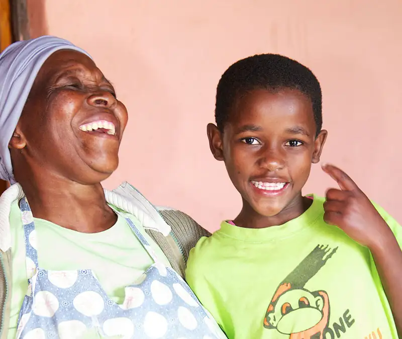
13.1 Who Are the Elderly? Aging in Society¶
Learning Objectives
By the end of this section, you should be able to:
- Differentiate between the major senior age groups (young-old, middle-old, and old-old)
- Describe the “graying of the United States” as the population experiences increased life expectancies
- Examine aging as a global issue
Think of U.S. movies and television shows you have watched recently. Did any of them feature older actors and actresses? What roles did they play? How were these older actors portrayed? Were they cast as main characters in a love story? Did they seem fully capable, safe, productive, and happy? Or were they a challenge to those around them? Were they grouchy or overly set in their ways?
Many media portrayals of the elderly reflect negative cultural attitudes toward aging. In the United States, society tends to glorify youth and associate it with beauty and sexuality. In comedies, the elderly are often associated with grumpiness or hostility. Rarely do the roles of older people convey the fullness of life experienced by seniors—as employees, lovers, or the myriad roles they have in real life. What values does this reflect?
One hindrance to society’s fuller understanding of aging is that people rarely understand the process of aging until they reach old age themselves. This lack of understanding is in stark contrast to our perspective on childhood, something we've all experienced. And as is often the case with a lack of knowledge or understanding, it leads to myths, assumptions, and stereotypes about elderly people and the aging process. While stereotypes associated with race and gender may lead to more critical thought and sensitivity, many people accept age stereotypes without question (Levy 2002). Consider this: At your school or workplace, you have likely had the opportunity (or may be required) to attend workshops on racial equity, cultural sensitivity, sexual harassment, and so on. But even though the elderly are all around us (and increasing in number every day), very few institutions conduct similar workshops or forums about the elderly. Each culture has a certain set of expectations and assumptions about aging, all of which are part of our socialization.
While the landmarks of maturing into adulthood are a source of pride, often celebrated at major milestones like First Communion, Bar Mitzvah, or Quinceañera, signs of natural aging can be cause for shame or embarrassment. Some people avoid acknowledging their aging by rejecting help when they need it , which can lead to physical injury or problems obtaining needed items or information. For example, when vaccinations for the COVID-19 virus became available, U.S. seniors who didn't have help from family and friends lagged significantly in receiving vaccines; this occurred despite of the fact that seniors were known to be the highest risk group and were the most susceptible to illness and death if they were infected (Graham 2021). Those elderly people who were resistant to reach out for help may have waited too long, and their neighbors or other community members may not have known they needed the help. Why would they take this risk? Researchers aim to uncover the motivations and challenges that may result in these circumstances and behavior.
Gerontology is a field of science that seeks to understand the process of aging and the challenges encountered as seniors grow older. Gerontologists investigate age, aging, and the aged. Gerontologists study what it is like to be an older adult in a society and the ways that aging affects members of a society. As a multidisciplinary field, gerontology includes the work of medical and biological scientists, social scientists, and even financial and economic scholars.
Social gerontology refers to a specialized field of gerontology that examines the social (and sociological) aspects of aging. Researchers focus on developing a broad understanding of the experiences of people at specific ages, such as mental and physical wellbeing, plus age-specific concerns such as the process of dying. Social gerontologists work as social researchers, counselors, community organizers, and service providers for older adults. Because of their specialization, social gerontologists are in a strong position to advocate for older adults.
Scholars in these disciplines have learned that “aging” reflects not only the physiological process of growing older but also our attitudes and beliefs about the aging process. You’ve likely seen online calculators that promise to determine your “real age” as opposed to your chronological age. These ads target the notion that people may “feel” a different age than their actual years. Some sixty-year-olds feel frail and elderly, while some eighty-year-olds feel sprightly.
Equally revealing is that as people grow older they define “old age” in terms of greater years than their current age (Logan 1992). Many people want to postpone old age and regard it as a phase that will never arrive. For example, many older Americans keep working well past what people consider retirement age, due to financial pressures or in order to remain, in their eyes, useful. Some older adults even succumb to stereotyping their own age group (Rothbaum 1983).
In the United States, the experience of being elderly has changed greatly over the past century. In the late 1800s and early 1900s, many U.S. households were home to multigenerational families, and the experiences and wisdom of elders was respected. They offered wisdom and support to their children and often helped raise their grandchildren (Sweetser 1984).
Multigenerational U.S. families began to decline after World War II, and their numbers reached a low point around 1980, but they are consistently on the rise. A 2010 Pew Research Center analysis of census data found that 49 million people in the United States lived in a family household with at least two adult generations—or a grandparent and at least one other generation a record at the time. By 2016, that number had grown to 64 million people living in multigenerational households, roughly 20 percent of the population (Cohn 2018).
Attitudes toward the elderly have also been affected by large societal changes that have happened over the past 100 years. Researchers believe industrialization and modernization have contributed greatly to lowering the power, influence, and prestige the elderly once held. On the other hand, the sheer numbers of elderly people in certain societies can have other effects, such as older people's influence on policies and politics based on their voting influence.
The elderly have both benefited and suffered from these rapid social changes. In modern societies, a strong economy created new levels of prosperity for many people. Healthcare has become more widely accessible, and medicine has advanced, which allows the elderly to live longer. However, older people are not as essential to the economic survival of their families and communities as they were in the past.
Studying Aging Populations¶
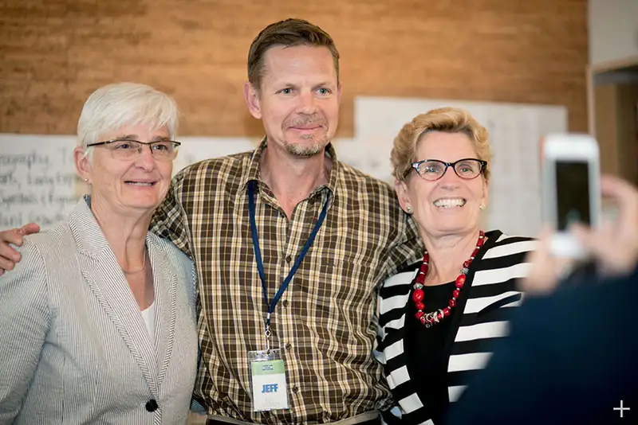
Since its creation in 1790, the U.S. Census Bureau has been tracking age in the population. Age is an important factor to analyze with accompanying demographic figures, such as income and health. The population chart below shows projected age distribution patterns for the next several decades.
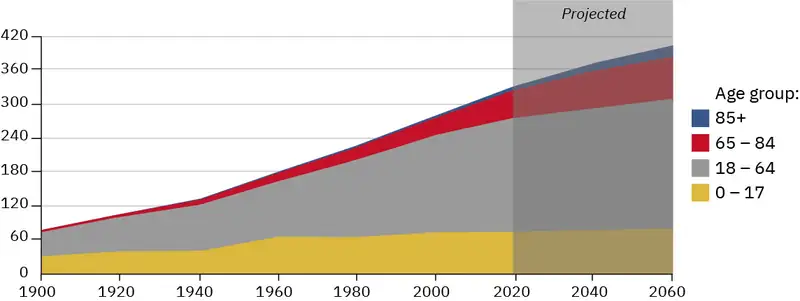
Statisticians use data to calculate the median age of a population, that is, the number that marks the halfway point in a group’s age range. In the United States, the median age is about forty (U.S. Census Bureau 2010). That means that about half of the people in the United States are under forty and about half are over forty. This median age has been increasing, which indicates the population as a whole is growing older.
A cohort is a group of people who share a statistical or demographic trait. People belonging to the same age cohort were born in the same time frame. Understanding a population’s age composition can point to certain social and cultural factors and help governments and societies plan for future social and economic challenges.
Sociological studies on aging might help explain the difference between Native American age cohorts and the general population. While Native American societies have a strong tradition of revering their elders, they also have a lower life expectancy because of lack of access to healthcare and high levels of mercury in fish, which is a traditional part of their diet.
Phases of Aging: The Young-Old, Middle-Old, and Old-Old¶
In the United States, all people over eighteen years old are considered adults, but there is a large difference between a person who is twenty-one years old and a person who is forty-five years old. More specific breakdowns, such as “young adult” and “middle-aged adult,” are helpful. In the same way, groupings are helpful in understanding the elderly. The elderly are often lumped together to include everyone over the age of sixty-five. But a sixty-five-year-old’s experience of life is much different from a ninety-year-old’s.
The United States’ older adult population can be divided into three life-stage subgroups: the young-old (approximately sixty-five to seventy-four years old), the middle-old (ages seventy-five to eighty-four years old), and the old-old (over age eighty-five). Today’s young-old age group is generally happier, healthier, and financially better off than the young-old of previous generations. In the United States, people are better able to prepare for aging because resources are more widely available.
Also, many people are making proactive quality-of-life decisions about their old age while they are still young. In the past, family members made care decisions when an elderly person reached a health crisis, often leaving the elderly person with little choice about what would happen. The elderly are now able to choose housing, for example, that allows them some independence while still providing care when it is needed. Living wills, retirement planning, and medical power of attorney are other concerns that are increasingly handled in advance.
The Graying of the United States¶
What does it mean to be elderly? Some define it as an issue of physical health, while others simply define it by chronological age. The U.S. government, for example, typically classifies people aged sixty-five years old as elderly, at which point citizens are eligible for federal benefits such as Social Security and Medicare. The World Health Organization has no standard, other than noting that sixty-five years old is the commonly accepted definition in most core nations, but it suggests a cut-off somewhere between fifty and fifty-five years old for semi-peripheral nations, such as those in Africa (World Health Organization 2012). AARP (formerly the American Association of Retired Persons) cites fifty as the eligible age of membership. It is interesting to note AARP’s name change; by taking the word “retired” out of its name, the organization can broaden its base to any older people in the United States, not just retirees. This is especially important now that many people are working to age seventy and beyond.
There is an element of social construction, both local and global, in the way individuals and nations define who is elderly; that is, the shared meaning of the concept of elderly is created through interactions among people in society. As the table demonstrates, different generations have varying perspectives on aging. Researchers asked questions about the ages at which people reach certain milestones or new categories in life. Members of the Baby Boom generation indicate that a person is officially "old" when they turn 73 years old. Millennials, a much younger group, felt that people became old when they turned 59. The same survey asked questions about the end of youth and the prime of life (Emling 2017). Interestingly, Boomers and GenXers both felt that youth "ended" by age 31 and that the prime of life didn't start until many years later. Millennials felt that people reached the prime of life at age 36, before youth ended at age 40. It's worth noting that at the time of the survey, the Millennials were all 36 and younger.
Table 13.1 A survey conducted by the U.S. Trust gathered opinion data on the aging milestones and categories. Boomers, Gen X people, and Millennials had generally different views.
| Boomer response | Gen X response | Millennial response | |
|---|---|---|---|
| At what age does youth end? | 31 | 31 | 40 |
| At what age is the prime of life? | 50 | 47 | 36 |
| At what age is someone old? | 73 | 65 | 59 |
Demographically, the U.S. population has undergone a massive shift both in the overall population of elderly people and their share of the total population. Both are significant and impactful on major policy decisions and day-to-day life. In 1900, the population of U.S people over sixty-five years old was 3 million, representing about 4 percent of the total population. That number increased to 33 million in 1994, and was roughly 12 percent of the total population (Hobbs 1994). By 2016 that number had grown to 49 million, about 15 percent of the total population (U.S. Census Bureau 2018). This is a greater than tenfold increase in the elderly population, compared to a mere tripling of both the total population and of the population under sixty-five years old (Hobbs 1994). This increase has been called “the graying of America,” a term that describes the phenomenon of a larger and larger percentage of the population getting older and older. There are several reasons why the United States is graying so rapidly. One of these is life expectancy: the average number of years a person born today may expect to live. When we review Census Bureau statistics grouping the elderly by age, it is clear that in the United States, at least, we are living longer. In 2010, there were about 80,000 centenarians in the United States alone. They make up one of the fastest-growing segments of the population (Boston University School of Medicine 2014).
It is interesting to note that not all people in the United States age equally. Most glaring is the difference between men and women; as Figure 13.6 shows, women have longer life expectancies than men. In 2010, there were ninety sixty-five-year-old men per one hundred sixty-five-year-old women. However, there were only eighty seventy-five-year-old men per one hundred seventy-five-year-old women, and only sixty eighty-five-year-old men per one hundred eighty-five-year-old women. Nevertheless, as the graph shows, the sex ratio actually increased over time, indicating that men are closing the gap between their life spans and those of women (U.S. Census Bureau 2010).
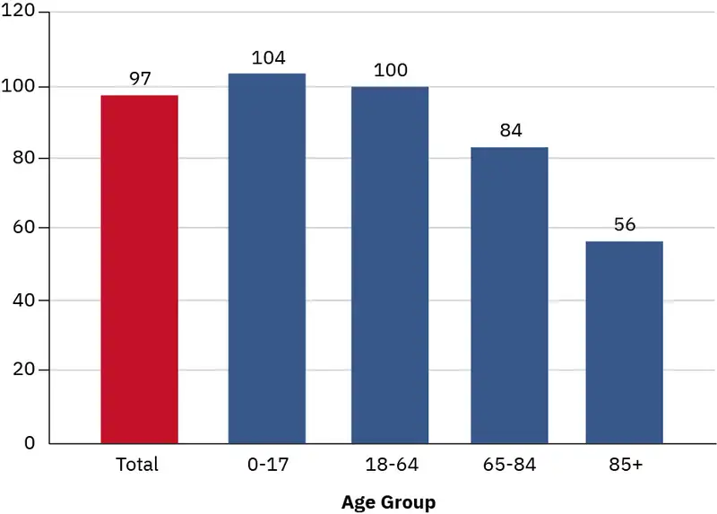
Baby Boomers¶
Of particular interest to gerontologists today is the population of Baby Boomers, the cohort born between 1946 and 1964 and now reaching their 60s and 70s. Coming of age in the 1960s and early 1970s, the baby boom generation was the first group of children and teenagers with their own spending power and therefore their own marketing power (Macunovich 2000). As this group has aged, it has redefined what it means to be young, middle-aged, and now old. People in the Boomer generation do not want to grow old the way their grandparents did; the result is a wide range of products designed to ward off the effects—or the signs—of aging. Previous generations of people over sixty-five were “old.” Baby Boomers are in “later life” or “the third age” (Gilleard and Higgs 2007).
The baby boom generation is the cohort driving much of the dramatic increase in the over-sixty-five population. Figure 13.7 shows a comparison of the U.S. population by age and gender between 2000 and 2010. The biggest bulge in the pyramid (representing the largest population group) moves up the pyramid over the course of the decade; in 2000, the largest population group was age thirty-five to fifty-five. In 2010, that group was age forty-five to sixty-five, meaning the oldest baby Boomers were just reaching the age at which the U.S. Census considers them elderly. By 2030, all Baby Boomers will be age 65 and older, and represent the largest group of elderly people.
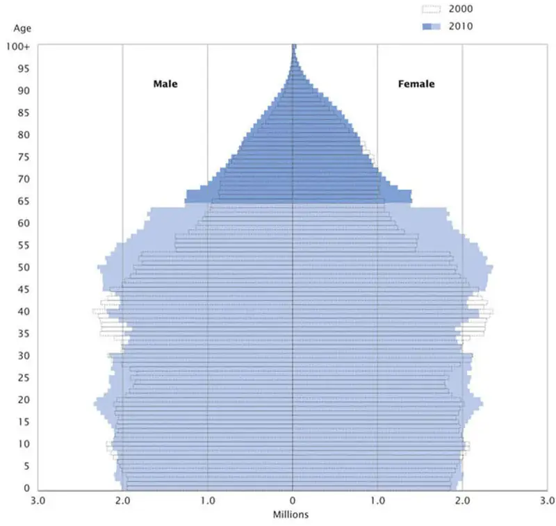
This aging of the Baby Boom cohort has serious implications for our society. Healthcare is one of the areas most impacted by this trend. According to the U.S. Department of Health and Human Services, healthcare spending is projected to grow by 5.5 percent each year from now until 2027. The portion of government spending on Medicare (a program in which the government covers some costs of healthcare for the elderly) is expected to increase from 3 percent of gross domestic product (GDP) in 2009 to 8 percent of GDP in 2030, and to 15 percent in 2080 (CMS 2018).
Certainly, as Boomers age, they will put increasing burdens on the entire U.S. healthcare system. The American Geriatrics Society notes that from 2013-2025, there will be a 45 percent increase in demand for physicians who specialize in geriatrics. As a result, over 33,000 specialists will be needed to fill the healthcare needs in 2025. And in 2020, there were only 6,320 such specialists in the United States (AGS 2021).
Unlike the elderly of previous generations, Boomers do not expect that turning sixty-five means their active lives are over. They are not willing to abandon work or leisure activities, but they may need more medical support to keep living vigorous lives. This desire of a large group of over-sixty-five-year-olds wanting to continue with a high activity level is driving innovation in the medical industry (Shaw n.d.).
The economic impact of aging Boomers is also an area of concern for many observers. Although the baby boom generation earned more than previous generations and enjoyed a higher standard of living, they did not adequately prepare for retirement. According to most retirement and investment experts, in order to maintain their accustomed lifestyle, people need to save ten times their annual income before retiring. (Note: That's income, not salary.) So if a person has an income of $60,000 per year, they should have saved $600,000. If they made $100,000 per year, they should have saved $1 million. But most Baby Boomers have only saved an estimated $144,000, and only 40 percent have saved more than $250,000 (Gravier 2021). The causes of these shortfalls are varied, and include everything from lavish spending to economic recession to companies folding and reducing pension payments. Higher education costs increased significantly while many Baby Boomers were sending their children to college. No matter what the cause, many retirees report a great deal of stress about running out of money.
Just as some observers are concerned about the possibility of Medicare being overburdened, Social Security is considered to be at risk. Social Security is a government-run retirement program funded primarily through payroll taxes. With enough people paying into the program, there should be enough money for retirees to take out. But with the aging Boomer cohort starting to receive Social Security benefits and fewer workers paying into the Social Security trust fund, economists warn that the system will collapse by the year 2037. A similar warning came in the 1980s; in response to recommendations from the Greenspan Commission, the retirement age (the age at which people could start receiving Social Security benefits) was raised from sixty-two to sixty-seven and the payroll tax was increased. A similar hike in retirement age, perhaps to seventy, is a possible solution to the current threat to Social Security.
Aging around the World¶
The United States is certainly not alone regarding its aging population; in fact, it doesn’t even have the fastest-growing group of elderly people. In 2019, the world had 703 million people aged 65 years or over. By 2050, that number is projected to double to 1.5 billion. One in six people in the world will be 65 or over (United Nations 2020).
This percentage is expected to increase and will have a huge impact on the dependency ratio: the number of citizens not in the labor force (young, disabled, or elderly) to citizens in the labor force (Bartram and Roe 2005). One country that will soon face a serious aging crisis is China, which is on the cusp of an “aging boom”— a period when its elderly population will dramatically increase. The number of people above age sixty in China today is about 178 million, which amounts to 13.3 percent of its total population (Xuequan 2011). By 2050, nearly a third of the Chinese population will be age sixty or older, which will put a significant burden on the labor force and impact China’s economic growth (Bannister, Bloom, and Rosenberg 2010). On a more global scale, the dependency ratio is projected to more than double in Eastern and South-Eastern Asia, Latin America and the Caribbean, Northern Africa and Western Asia, and Central and Southern Asia.
As healthcare improves and life expectancy increases across the world, elder care will be an emerging issue. Wienclaw (2009) suggests that with fewer working-age citizens available to provide home care and long-term assisted care to the elderly, the costs of elder care will increase.
Worldwide, the expectation governing the amount and type of elder care varies from culture to culture. For example, in Asia the responsibility for elder care lies firmly on the family (Yap, Thang, and Traphagan 2005). This is different from the approach in most Western countries, where the elderly are considered independent and are expected to tend to their own care. It is not uncommon for family members to intervene only if the elderly relative requires assistance, often due to poor health. Even then, caring for the elderly is considered voluntary. In the United States, decisions to care for an elderly relative are often conditionally based on the promise of future returns, such as inheritance or, in some cases, the amount of support the elderly provided to the caregiver in the past (Hashimoto 1996).
These differences are based on cultural attitudes toward aging. In China, several studies have noted the attitude of filial piety (deference and respect to one’s parents and ancestors in all things) as defining all other virtues (Hsu 1971; Hamilton 1990). Cultural attitudes in Japan prior to approximately 1986 supported the idea that the elderly deserve assistance (Ogawa and Retherford 1993). However, seismic shifts in major social institutions (like family and economy) have created an increased demand for community and government care. For example, the increase in women working outside the home has made it more difficult to provide in-home care to aging parents, which leads to an increase in the need for government-supported institutions (Raikhola and Kuroki 2009).
In the United States, by contrast, many people view caring for the elderly as a burden. Even when there is a family member able and willing to provide for an elderly family member, 60 percent of family caregivers are employed outside the home and are unable to provide the needed support. At the same time, however, many middle-class families are unable to bear the financial burden of “outsourcing” professional healthcare, resulting in gaps in care (Bookman and Kimbrel 2011). It is important to note that even within the United States not all demographic groups treat aging the same way. While most people in the United States are reluctant to place their elderly members into out-of-home assisted care, demographically speaking, the groups least likely to do so are Latinos, African Americans, and Asians (Bookman and Kimbrel 2011).
Globally, the United States and other core nations are fairly well equipped to handle the demands of an exponentially increasing elderly population. However, peripheral and semi-peripheral nations face similar increases without comparable resources. Poverty among elders is a concern, especially among elderly women. The feminization of the aging poor, evident in peripheral nations, is directly due to the number of elderly women in those countries who are single, illiterate, and not a part of the labor force (Mujahid 2006).
In 2002, the Second World Assembly on Aging was held in Madrid, Spain, resulting in the Madrid Plan, an internationally coordinated effort to create comprehensive social policies to address the needs of the worldwide aging population. The plan identifies three themes to guide international policy on aging: 1) publicly acknowledging the global challenges caused by, and the global opportunities created by, a rising global population; 2) empowering the elderly; and 3) linking international policies on aging to international policies on development (Zelenev 2008).
The Madrid Plan has not yet been successful in achieving all its aims. However, it has increased awareness of the various issues associated with a global aging population, as well as raising the international consciousness to the way that the factors influencing the vulnerability of the elderly (social exclusion, prejudice and discrimination, and a lack of socio-legal protection) overlap with other developmental issues (basic human rights, empowerment, and participation), leading to an increase in legal protections (Zelenev 2008).
13.2 The Process of Aging¶
Learning Objectives
By the end of this section, you should be able to:
- Explain the biological, social, and psychological changes that occur in aging
- Describe the birth of the field of geriatrics
- Examine attitudes toward death and dying and how they affect the elderly
- Name the five stages of grief developed by Dr. Elisabeth Kübler-Ross
As human beings grow older, they go through different phases or stages of life. It is helpful to understand aging in the context of these phases. A life course is the period from birth to death, including a sequence of predictable life events such as physical maturation. Each phase comes with different responsibilities and expectations, which of course vary by individual and culture. Children love to play and learn, looking forward to becoming preteens. As preteens begin to test their independence, they are eager to become teenagers. Teenagers anticipate the promises and challenges of adulthood. Adults become focused on creating families, building careers, and experiencing the world as independent people. Finally, many adults look forward to old age as a wonderful time to enjoy life without as much pressure from work and family life. In old age, grandparenthood can provide many of the joys of parenthood without all the hard work that parenthood entails. And as work responsibilities abate, old age may be a time to explore hobbies and activities that there was no time for earlier in life. But for other people, old age is not a phase that they look forward to. Some people fear old age and do anything to “avoid” it by seeking medical and cosmetic fixes for the natural effects of age. These differing views on the life course are the result of the cultural values and norms into which people are socialized, but in most cultures, age is a master status influencing self-concept, as well as social roles and interactions.
Through the phases of the life course, dependence and independence levels change. At birth, newborns are dependent on caregivers for everything. As babies become toddlers and toddlers become adolescents and then teenagers, they assert their independence more and more. Gradually, children come to be considered adults, responsible for their own lives, although the point at which this occurs is widely varied among individuals, families, and cultures.
As Riley (1978) notes, aging is a lifelong process and entails maturation and change on physical, psychological, and social levels. Age, much like race, class, and gender, is a hierarchy in which some categories are more highly valued than others. For example, while many children look forward to gaining independence, Packer and Chasteen (2006) suggest that even in children, age prejudice leads to a negative view of aging. This, in turn, can lead to a widespread segregation between the old and the young at the institutional, societal, and cultural levels (Hagestad and Uhlenberg 2006).
Sociological Research: Dr. Ignatz Nascher and the Birth of Geriatrics
In the early 1900s, a New York physician named Dr. Ignatz Nascher coined the term geriatrics, a medical specialty that focuses on the elderly. He created the word by combining two Greek words: geron (old man) and iatrikos (medical treatment). Nascher based his work on what he observed as a young medical student, when he saw many acutely ill elderly people who were diagnosed simply as “being old.” There was nothing medicine could do, his professors declared, about the syndrome of “old age.”
Nascher refused to accept this dismissive view, seeing it as medical neglect. He believed it was a doctor’s duty to prolong life and relieve suffering whenever possible. In 1914, he published his views in his book Geriatrics: The Diseases of Old Age and Their Treatment (Clarfield 1990). Nascher saw the practice of caring for the elderly as separate from the practice of caring for the young, just as pediatrics (caring for children) is different from caring for grown adults (Clarfield 1990).
Nascher had high hopes for his pioneering work. He wanted to treat the aging, especially those who were poor and had no one to care for them. Many of the elderly poor were sent to live in “almshouses,” or public old-age homes (Cole 1993). Conditions were often terrible in these almshouses, where the aging were often sent and just forgotten.
As hard as it might be to believe today, Nascher’s approach was once considered unique. At the time of his death, in 1944, he was disappointed that the field of geriatrics had not made greater strides. In what ways are the elderly better off today than they were before Nascher’s ideas gained acceptance?
Biological Changes¶
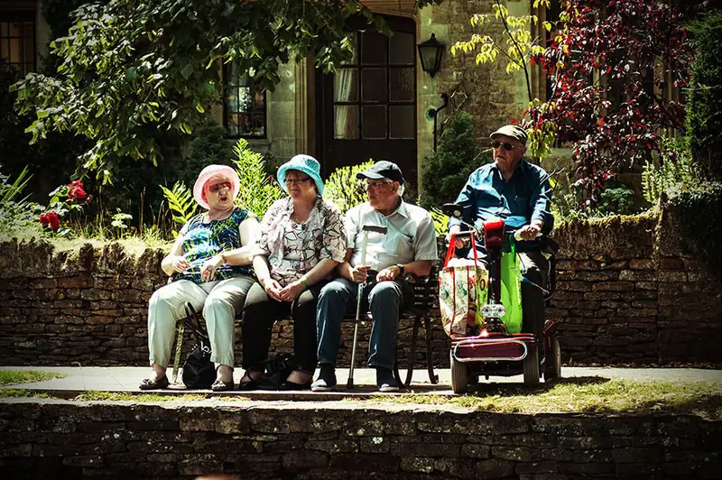
Each person experiences age-related changes based on many factors. Biological factors, such as molecular and cellular changes, are called primary aging, while aging that occurs due to controllable factors, such as lack of physical exercise and poor diet, is called secondary aging (Whitbourne and Whitbourne 2010).
Most people begin to see signs of aging after fifty years old, when they notice the physical markers of age. Skin becomes thinner, drier, and less elastic. Wrinkles form. Hair begins to thin and gray. Men prone to balding start losing hair. The difficulty or relative ease with which people adapt to these changes is dependent in part on the meaning given to aging by their particular culture. A culture that values youthfulness and beauty above all else leads to a negative perception of growing old. Conversely, a culture that reveres the elderly for their life experience and wisdom contributes to a more positive perception of what it means to grow old.
The effects of aging can feel daunting, and sometimes the fear of physical changes (like declining energy, food sensitivity, and loss of hearing and vision) is more challenging to deal with than the changes themselves. The way people perceive physical aging is largely dependent on how they were socialized. If people can accept the changes in their bodies as a natural process of aging, the changes will not seem as frightening.
According to the federal Administration on Aging (2011), in 2009 fewer people over sixty-five years old assessed their health as “excellent” or “very good” (41.6 percent) compared to those aged eighteen to sixty-four (64.4 percent). Evaluating data from the National Center for Health Statistics and the U.S. Bureau of Labor Statistics, the Administration on Aging found that from 2006 to 2008, the most frequently reported health issues for those over sixty-five years old included arthritis (50 percent), hypertension (38 percent), heart disease (32 percent), and cancer (22 percent). About 27 percent of people age sixty and older are considered obese by current medical standards. Parker and Thorslund (2006) found that while the trend is toward steady improvement in most disability measures, there is a concomitant increase in functional impairments (disability) and chronic diseases. At the same time, medical advances have reduced some of the disabling effects of those diseases (Crimmins 2004).
Some impacts of aging are gender-specific. Some of the disadvantages aging women face arise from long-standing social gender roles. For example, Social Security favors men over women, inasmuch as women do not earn Social Security benefits for the unpaid labor they perform (usually at home) as an extension of their gender roles. In the healthcare field, elderly female patients are more likely than elderly men to see their healthcare concerns trivialized (Sharp 1995) and are more likely to have their health issues labeled psychosomatic (Munch 2004). Another female-specific aspect of aging is that mass-media outlets often depict elderly females in terms of negative stereotypes and as less successful than older men (Bazzini and Mclntosh I997).
For men, the process of aging—and society’s response to and support of the experience—may be quite different. The gradual decrease in male sexual performance that occurs as a result of primary aging is medicalized and constructed as needing treatment (Marshall and Katz 2002) so that a man may maintain a sense of youthful masculinity. On the other hand, aging men have fewer opportunities to assert their masculine identities in the company of other men (for example, through sports participation) (Drummond 1998). And some social scientists have observed that the aging male body is depicted in the Western world as genderless (Spector-Mersel 2006).
Social and Psychological Changes¶
Male or female, growing older means confronting the psychological issues that come with entering the last phase of life. Young people moving into adulthood take on new roles and responsibilities as their lives expand, but an opposite arc can be observed in old age. What are the hallmarks of social and psychological change?
Retirement—the withdrawal from paid work at a certain age—is a relatively recent idea. Up until the late nineteenth century, people worked about sixty hours a week until they were physically incapable of continuing. Following the American Civil War, veterans receiving pensions were able to withdraw from the workforce, and the number of working older men began declining. A second large decline in the number of working men began in the post-World War II era, probably due to the availability of Social Security, and a third large decline in the 1960s and 1970s was probably due to the social support offered by Medicare and the increase in Social Security benefits (Munnell 2011).
In the twenty-first century, most people hope that at some point they will be able to stop working and enjoy the fruits of their labor. But do we look forward to this time or fear it? When people retire from familiar work routines, some easily seek new hobbies, interests, and forms of recreation. Many find new groups and explore new activities, but others may find it more difficult to adapt to new routines and loss of social roles, losing their sense of self-worth in the process.
Each phase of life has challenges that come with the potential for fear. Erik H. Erikson (1902–1994), in his view of socialization, broke the typical lifespan into eight phases. Each phase presents a particular challenge that must be overcome. In the final stage, old age, the challenge is to embrace integrity over despair. Some people are unable to successfully overcome the challenge. They may have to confront regrets, such as being disappointed in their children’s lives or perhaps their own. They may have to accept that they will never reach certain career goals. Or they must come to terms with what their career success has cost them, such as time with their family or declining personal health. Others, however, are able to achieve a strong sense of integrity and are able to embrace the new phase in life. When that happens, there is tremendous potential for creativity. They can learn new skills, practice new activities, and peacefully prepare for the end of life.
For some, overcoming despair might entail remarriage after the death of a spouse. A study conducted by Kate Davidson (2002) reviewed demographic data that asserted men were more likely to remarry after the death of a spouse and suggested that widows (the surviving female spouse of a deceased male partner) and widowers (the surviving male spouse of a deceased female partner) experience their postmarital lives differently. Many surviving women enjoyed a new sense of freedom, since they were living alone for the first time. On the other hand, for surviving men, there was a greater sense of having lost something, because they were now deprived of a constant source of care as well as the focus of their emotional life.
Aging and Sexuality¶
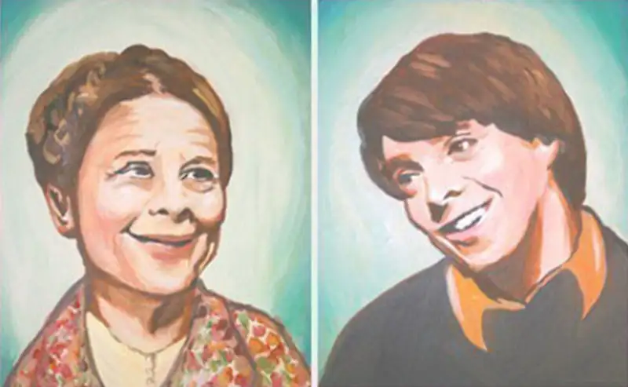
Although it is sometimes difficult to have an open, public national dialogue about aging and sexuality, the reality is that our sexual selves do not disappear after age sixty-five. People continue to enjoy sex—and not always safe sex—well into their later years. In fact, some research suggests that as many as one in five new cases of AIDS occurs in adults over sixty-five years old (Hillman 2011).
In some ways, old age may be a time to enjoy sex more, not less. For women, the elder years can bring a sense of relief as the fear of an unwanted pregnancy is removed and the children are grown and taking care of themselves. However, while we have expanded the number of psycho-pharmaceuticals to address sexual dysfunction in men, it was not until recently that the medical field acknowledged the existence of female sexual dysfunctions (Bryant 2004). Additional treatments have been developed or applied to address sexual desire or dysfunction, which sometimes leads members of both sexes to believe that problems are easily resolved. But emotional and social factors play an important role, and medications on their own cannot resolve all issues (Nonacs 2018).
Aging and sexuality also concerns relationships between people of different ages, referred to as age-gap relationships by researchers. These types of relationships are certainly not confined to the elderly, but people often make assumptions about elderly people in romantic relationships with younger people (and vice versa). Research into age-gap relationships indicates that social pressure can have impacts on relationship commitment or lead to break ups. The life stages of the people can also have impacts, especially if one of them is elderly and the other is not (Karantzas 2018). A relationship between a 30-year-old and a 45-year-old most likely involves fewer discussions about serious health issues and retirement decisions than one between a 55-year-old and a 70-year-old. Both have 15-year age gaps, but the circumstances are quite different.
Sociology in the Real World: Aging “Out:” LGBTQ Seniors
How do different groups in our society experience the aging process? Are there any experiences that are universal, or do different populations have different experiences? An emerging field of study looks at how lesbian, gay, bisexual, transgender, and queer/questioning (LGBTQ) people experience the aging process and how their experience differs from that of other groups or the dominant group. This issue is expanding with the aging of the baby boom generation; not only will aging boomers represent a huge bump in the general elderly population but also the number of LGBTQ seniors is expected to double by 2030 (Fredriksen-Goldsen et al. 2011).
A recent study titled The Aging and Health Report: Disparities and Resilience among Lesbian, Gay, Bisexual, and Transgender Older Adults finds that LGBTQ older adults have higher rates of disability and depression than their heterosexual peers. They are also less likely to have a support system that might provide elder care: a partner and supportive children (Fredriksen-Goldsen et al. 2011). Even for those LGBTQ seniors who are partnered, some states do not recognize a legal relationship between two people of the same sex, which reduces their legal protection and financial options.
As they transition to assisted-living facilities, LGBTQ people have the added burden of “disclosure management:” the way they share their sexual and relationship identity. In one case study, a seventy-eight-year-old lesbian woman lived alone in a long-term care facility. She had been in a long-term relationship of thirty-two years and had been visibly active in the LGBTQ community earlier in her life. However, in the long-term care setting, she was much quieter about her sexual orientation. She “selectively disclosed” her sexual identity, feeling safer with anonymity and silence (Jenkins et al. 2010). A study from the National Senior Citizens Law Center reports that only 22 percent of LGBTQ older adults expect they could be open about their sexual orientation or gender identity in a long-term care facility. Even more telling is the finding that only 16 percent of non-LGBTQ older adults expected that LGBTQ people could be open with facility staff (National Senior Citizens Law Center 2011).
Same-sex marriage—a civil rights battleground that is being fought in many states—can have major implications for the way the LGBTQ community ages. With marriage comes the legal and financial protection afforded to opposite-sex couples, as well as less fear of exposure and a reduction in the need to “retreat to the closet” (Jenkins et al. 2010). Changes in this area are coming slowly, and in the meantime, advocates have many policy recommendations for how to improve the aging process for LGBTQ individuals. These recommendations include increasing federal research on LGBTQ elders, increasing (and enforcing existing) laws against discrimination, and amending the federal Family and Medical Leave Act to cover LGBTQ caregivers (Grant 2009).
Death and Dying¶
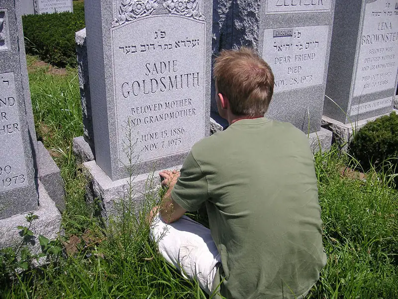
For most of human history, the standard of living was significantly lower than it is now. Humans struggled to survive with few amenities and very limited medical technology. The risk of death due to disease or accident was high in any life stage, and life expectancy was low. As people began to live longer, death became associated with old age.
For many teenagers and young adults, losing a grandparent or another older relative can be the first loss of a loved one they experience. It may be their first encounter with grief, a psychological, emotional, and social response to the feelings of loss that accompanies death or a similar event.
People tend to perceive death, their own and that of others, based on the values of their culture. While some may look upon death as the natural conclusion to a long, fruitful life, others may find the prospect of dying frightening to contemplate. People tend to have strong resistance to the idea of their own death, and strong emotional reactions of loss to the death of loved ones. Viewing death as a loss, as opposed to a natural or tranquil transition, is often considered normal in the United States.
What may be surprising is how few studies were conducted on death and dying prior to the 1960s. Death and dying were fields that had received little attention until a psychologist named Elisabeth Kübler-Ross began observing people who were in the process of dying. As Kübler-Ross witnessed people’s transition toward death, she found some common threads in their experiences. She observed that the process had five distinct stages: denial, anger, bargaining, depression, and acceptance. She published her findings in a 1969 book called On Death and Dying. The book remains a classic on the topic today.
Kübler-Ross found that a person’s first reaction to the prospect of dying is denial: this is characterized by the person's not wanting to believe he or she is dying, with common thoughts such as “I feel fine” or “This is not really happening to me.” The second stage is anger, when loss of life is seen as unfair and unjust. A person then resorts to the third stage, bargaining: trying to negotiate with a higher power to postpone the inevitable by reforming or changing the way he or she lives. The fourth stage, psychological depression, allows for resignation as the situation begins to seem hopeless. In the final stage, a person adjusts to the idea of death and reaches acceptance. At this point, the person can face death honestly, by regarding it as a natural and inevitable part of life and can make the most of their remaining time.
The work of Kübler-Ross was eye-opening when it was introduced. It broke new ground and opened the doors for sociologists, social workers, health practitioners, and therapists to study death and help those who were facing death. Kübler-Ross’s work is generally considered a major contribution to thanatology: the systematic study of death and dying.
Of special interests to thanatologists is the concept of “dying with dignity.” Modern medicine includes advanced medical technology that may prolong life without a parallel improvement to the quality of life one may have. In some cases, people may not want to continue living when they are in constant pain and no longer enjoying life. Should patients have the right to choose to die with dignity? Dr. Jack Kevorkian was a staunch advocate for physician-assisted suicide: the voluntary or physician-assisted use of lethal medication provided by a medical doctor to end one’s life. This right to have a doctor help a patient die with dignity is controversial. In the United States, Oregon was the first state to pass a law allowing physician-assisted suicides. In 1997, Oregon instituted the Death with Dignity Act, which required the presence of two physicians for a legal assisted suicide. This law was successfully challenged by U.S. Attorney General John Ashcroft in 2001, but the appeals process ultimately upheld the Oregon law. As of 2019, seven states and the District of Columbia have passed similar laws allowing physician assisted suicide.
The controversy surrounding death with dignity laws is emblematic of the way our society tries to separate itself from death. Health institutions have built facilities to comfortably house those who are terminally ill. This is seen as a compassionate act, helping relieve the surviving family members of the burden of caring for the dying relative. But studies almost universally show that people prefer to die in their own homes (Lloyd, White, and Sutton 2011). Is it our social responsibility to care for elderly relatives up until their death? How do we balance the responsibility for caring for an elderly relative with our other responsibilities and obligations? As our society grows older, and as new medical technology can prolong life even further, the answers to these questions will develop and change.
The changing concept of hospice is an indicator of our society’s changing view of death. Hospice is a type of healthcare that treats terminally ill people when “cure-oriented treatments” are no longer an option (Hospice Foundation of America 2012b). Hospice doctors, nurses, and therapists receive special training in the care of the dying. The focus is not on getting better or curing the illness, but on passing out of this life in comfort and peace. Hospice centers exist as a place where people can go to die in comfort, and increasingly, hospice services encourage at-home care so that someone has the comfort of dying in a familiar environment, surrounded by family (Hospice Foundation of America 2012a). While many of us would probably prefer to avoid thinking of the end of our lives, it may be possible to take comfort in the idea that when we do approach death in a hospice setting, it is in a familiar, relatively controlled place.
13.3 Challenges Facing the Elderly¶
Learning Objectives
By the end of this section, you should be able to:
- Interpret the historical and current trends of poverty among elderly populations
- Recognize ageist thinking and ageist attitudes in individuals and institutions
- Identify risks factors and outcomes regarding mistreatment and abuse of elderly individuals
Aging comes with many challenges. The loss of independence is one potential part of the process, as are diminished physical ability and age discrimination. The term senescence refers to the aging process, including biological, emotional, intellectual, social, and spiritual changes. This section discusses some of the challenges we encounter during this process.
As already observed, many older adults remain highly self-sufficient. Others require more care. Because the elderly typically no longer hold jobs, finances can be a challenge. And due to cultural misconceptions, older people can be targets of ridicule and stereotypes. The elderly face many challenges in later life, but they do not have to enter old age without dignity.
Poverty¶
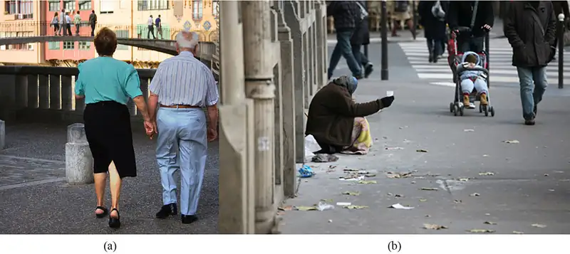
For many people in the United States, growing older once meant living with less income. In 1960, almost 35 percent of the elderly existed on poverty-level incomes. A generation ago, the nation’s oldest populations had the highest risk of living in poverty.
At the start of the twenty-first century, the older population was putting an end to that trend. Among people over sixty-five years old, the poverty rate fell from 30 percent in 1967 to 9.7 percent in 2008, well below the national average of 13.2 percent (U.S. Census Bureau 2009). However, given the subsequent recession, which severely reduced the retirement savings of many while taxing public support systems, how are the elderly affected? According to the Kaiser Commission on Medicaid and the Uninsured, the national poverty rate among the elderly had risen to 14 percent by 2010 (Urban Institute and Kaiser Commission 2010).
Before the recession hit, what had changed to cause a reduction in poverty among the elderly? What social patterns contributed to the shift? For several decades, a greater number of women joined the workforce. More married couples earned double incomes during their working years and saved more money for their retirement. Private employers and governments began offering better retirement programs. By 1990, senior citizens reported earning 36 percent more income on average than they did in 1980; that was five times the rate of increase for people under age thirty-five (U.S. Census Bureau 2009).
In addition, many people were gaining access to better healthcare. New trends encouraged people to live more healthful lifestyles by placing an emphasis on exercise and nutrition. There was also greater access to information about the health risks of behaviors such as cigarette smoking, alcohol consumption, and drug use. Because they were healthier, many older people continue to work past the typical retirement age and provide more opportunity to save for retirement. Will these patterns return once the recession ends? Sociologists will be watching to see. In the meantime, they are realizing the immediate impact of the recession on elderly poverty.
During the recession, older people lost some of the financial advantages that they’d gained in the 1980s and 1990s. From October 2007 to October 2009 the values of retirement accounts for people over age fifty lost 18 percent of their value. The sharp decline in the stock market also forced many to delay their retirement (Administration on Aging 2009).
Ageism¶
Driving to the grocery store, Peter, twenty-three years old, got stuck behind a car on a four-lane main artery through his city’s business district. The speed limit was thirty-five miles per hour, and while most drivers sped along at forty to forty-five mph, the driver in front of him was going twenty-five miles per hour. Peter tapped on his horn. He tailgated the driver. Finally, Peter had a chance to pass the car. He glanced over. Sure enough, Peter thought, a gray-haired old man guilty of “DWE,” driving while elderly.
At the grocery store, Peter waited in the checkout line behind an older woman. She paid for her groceries, lifted her bags of food into her cart, and toddled toward the exit. Peter, guessing her to be about eighty years old, was reminded of his grandmother. He paid for his groceries and caught up with her.
“Can I help you with your cart?” he asked.
“No, thank you. I can get it myself,” she said and marched off toward her car.
Peter’s responses to both older people, the driver and the shopper, were prejudiced. In both cases, he made unfair assumptions. He assumed the driver drove cautiously simply because the man was a senior citizen, and he assumed the shopper needed help carrying her groceries just because she was an older woman.
Responses like Peter’s toward older people are fairly common. He didn’t intend to treat people differently based on personal or cultural biases, but he did. Ageism is discrimination (when someone acts on a prejudice) based on age. Dr. Robert Butler coined the term in 1968, noting that ageism exists in all cultures (Brownell). Ageist attitudes and biases based on stereotypes reduce elderly people to inferior or limited positions.
Ageism can vary in severity. Peter’s attitudes are probably seen as fairly mild, but relating to the elderly in ways that are patronizing can be offensive. When ageism is reflected in the workplace, in healthcare, and in assisted-living facilities, the effects of discrimination can be more severe. Ageism can make older people fear losing a job, feel dismissed by a doctor, or feel a lack of power and control in their daily living situations.
In early societies, the elderly were respected and revered. Many preindustrial societies observed gerontocracy, a type of social structure wherein the power is held by a society’s oldest members. In some countries today, the elderly still have influence and power and their vast knowledge is respected. Reverence for the elderly is still a part of some cultures, but it has changed in many places because of social factors.
In many modern nations, however, industrialization contributed to the diminished social standing of the elderly. Today wealth, power, and prestige are also held by those in younger age brackets. The average age of corporate executives was fifty-nine years old in 1980. In 2008, the average age had lowered to fifty-four years old (Stuart 2008). Some older members of the workforce felt threatened by this trend and grew concerned that younger employees in higher level positions would push them out of the job market. Rapid advancements in technology and media have required new skill sets that older members of the workforce are less likely to have.
Changes happened not only in the workplace but also at home. In agrarian societies, a married couple cared for their aging parents. The oldest members of the family contributed to the household by doing chores, cooking, and helping with child care. As economies shifted from agrarian to industrial, younger generations moved to cities to work in factories. The elderly began to be seen as an expensive burden. They did not have the strength and stamina to work outside the home. What began during industrialization, a trend toward older people living apart from their grown children, has become commonplace. As you saw in the opening, children of older people can also feel guilt, sadness, and sometimes anger at both taking care of aging parents and with accepting that their parents are losing their abilities. Living apart, especially if an older person is moved to a nursing home or other facility, can often exacerbate these issues.
Mistreatment and Abuse¶
Mistreatment and abuse of the elderly is a major social problem. As expected, with the biology of aging, the elderly sometimes become physically frail. This frailty renders them dependent on others for care—sometimes for small needs like household tasks, and sometimes for assistance with basic functions like eating and toileting. Unlike a child, who also is dependent on another for care, an elder is an adult with a lifetime of experience, knowledge, and opinions—a more fully developed person. This makes the care-providing situation more complex.
Elder abuse occurs when a caretaker intentionally deprives an older person of care or harms the person in his or her charge. Caregivers may be family members, relatives, friends, health professionals, or employees of senior housing or nursing care. The elderly may be subject to many different types of abuse.
In a 2009 study on the topic led by Dr. Ron Acierno, the team of researchers identified five major categories of elder abuse: 1) physical abuse, such as hitting or shaking, 2) sexual abuse, including rape and coerced nudity, 3) psychological or emotional abuse, such as verbal harassment or humiliation, 4) neglect or failure to provide adequate care, and 5) financial abuse or exploitation (Acierno 2010).
The National Center on Elder Abuse (NCEA), a division of the U.S. Administration on Aging, also identifies abandonment and self-neglect as types of abuse. Table 13.2 shows some of the signs and symptoms that the NCEA encourages people to notice.
Table 13.2 Signs of Elder Abuse The National Center on Elder Abuse encourages people to watch for these signs of mistreatment. (Credit: National Center on Elder Abuse)
| Type of Abuse | Signs and Symptoms |
|---|---|
| Physical abuse | Bruises, untreated wounds, sprains, broken glasses, lab findings of medication overdose |
| Sexual abuse | Bruises around breasts or genitals, torn or bloody underclothing, unexplained venereal disease |
| Emotional/psychological abuse | Being upset or withdrawn, unusual dementia-like behavior (rocking, sucking) |
| Neglect | Poor hygiene, untreated bed sores, dehydration, soiled bedding |
| Financial | Sudden changes in banking practices, inclusion of additional names on bank cards, abrupt changes to will |
| Self-neglect | Untreated medical conditions, unclean living area, lack of medical items like dentures or glasses |
How prevalent is elder abuse? Two recent U.S. studies found that roughly one in ten elderly people surveyed had suffered at least one form of elder abuse. Some social researchers believe elder abuse is underreported and that the number may be higher. The risk of abuse also increases in people with health issues such as dementia (Kohn and Verhoek-Oftedahl 2011). Older women were found to be victims of verbal abuse more often than their male counterparts.
In Acierno’s study, which included a sample of 5,777 respondents aged sixty and older, 5.2 percent of respondents reported financial abuse, 5.1 percent said they’d been neglected, and 4.6 endured emotional abuse (Acierno 2010). The prevalence of physical and sexual abuse was lower at 1.6 and 0.6 percent, respectively (Acierno 2010).
Other studies have focused on the caregivers to the elderly in an attempt to discover the causes of elder abuse. Researchers identified factors that increased the likelihood of caregivers perpetrating abuse against those in their care. Those factors include inexperience, having other demands such as jobs (for those who weren’t professionally employed as caregivers), caring for children, living full-time with the dependent elder, and experiencing high stress, isolation, and lack of support (Kohn and Verhoek-Oftedahl 2011).
A history of depression in the caregiver was also found to increase the likelihood of elder abuse. Neglect was more likely when care was provided by paid caregivers. Many of the caregivers who physically abused elders were themselves abused—in many cases, when they were children. Family members with some sort of dependency on the elder in their care were more likely to physically abuse that elder. For example, an adult child caring for an elderly parent while at the same time depending on some form of income from that parent, is considered more likely to perpetrate physical abuse (Kohn and Verhoek-Oftedahl 2011).
A survey in Florida found that 60.1 percent of caregivers reported verbal aggression as a style of conflict resolution. Paid caregivers in nursing homes were at a high risk of becoming abusive if they had low job satisfaction, treated the elderly like children, or felt burnt out (Kohn and Verhoek-Oftedahl 2011). Caregivers who tended to be verbally abusive were found to have had less training, lower education, and higher likelihood of depression or other psychiatric disorders. Based on the results of these studies, many housing facilities for seniors have increased their screening procedures for caregiver applicants.
Big Picture: World War II Veterans
World War II was a defining event in recent human history, and set the stage for America to become an economic and military superpower. Over 16 million Americans served in the war—an enormous amount on any scale, but especially significant considering that the U.S. had almost 200 million fewer people than it does today. That sizable and significant group is aging. Many are in their eighties and nineties, and many others have already passed on. Of the 16 million, less than 300,000 are alive. Data suggest that by 2036, there will be no living veterans of WWII (U.S. Department of Veteran Affairs).
When these veterans came home from the war and ended their service, little was known about posttraumatic stress disorder (PTSD). These heroes did not receive the mental and physical healthcare that could have helped them. As a result, many of them, now in old age, are dealing with the effects of PTSD. Research suggests a high percentage of World War II veterans are plagued by flashback memories and isolation, and that many “self-medicate” with alcohol.
Research has found that veterans of any conflict are more than twice as likely as nonveterans to die by suicide, with rates highest among the oldest veterans. Reports show that WWII-era veterans are four times as likely to take their own lives as people of the same age with no military service (Glantz 2010).
In May 2004, the National World War II Memorial in Washington, DC, was completed and dedicated to honor those who served during the conflict. Dr. Earl Morse, a physician and retired Air Force captain, treated many WWII veterans. He encouraged them to visit the memorial, knowing it could help them heal. Many WWII veterans expressed interest in seeing the memorial. Unfortunately, many were in their eighties and were neither physically nor financially able to travel on their own. Dr. Morse arranged to personally escort some of the veterans and enlisted volunteer pilots who would pay for the flights themselves. He also raised money, insisting the veterans pay nothing. By the end of 2005, 137 veterans, many using wheelchairs, had made the trip. The Honor Flight Network was up and running.
As of 2017, the Honor Flight Network had flown more than 200,000 U.S. veterans of World War II, the Korean War, and the Vietnam War to Washington. The round-trip flights leave for day-long trips from over 140 airports in thirty states, staffed by volunteers who care for the needs of the elderly travelers (Honor Flight Network 2021).
13.4 Theoretical Perspectives on Aging¶
Learning Objectives
By the end of this section, you should be able to:
- Compare and contrast sociological theoretical perspectives on aging
What roles do individual senior citizens play in your life? How do you relate to and interact with older people? What role do they play in neighborhoods and communities, in cities and in states? Sociologists are interested in exploring the answers to questions such as these through three different perspectives: functionalism, symbolic interactionism, and conflict theory.
Functionalism¶
Functionalists analyze how the parts of society work together. Functionalists gauge how society’s parts are working together to keep society running smoothly. How does this perspective address aging? The elderly, as a group, are one of society’s vital parts.
Functionalists find that people with better resources who stay active in other roles adjust better to old age (Crosnoe and Elder 2002). Three social theories within the functional perspective were developed to explain how older people might deal with later-life experiences.
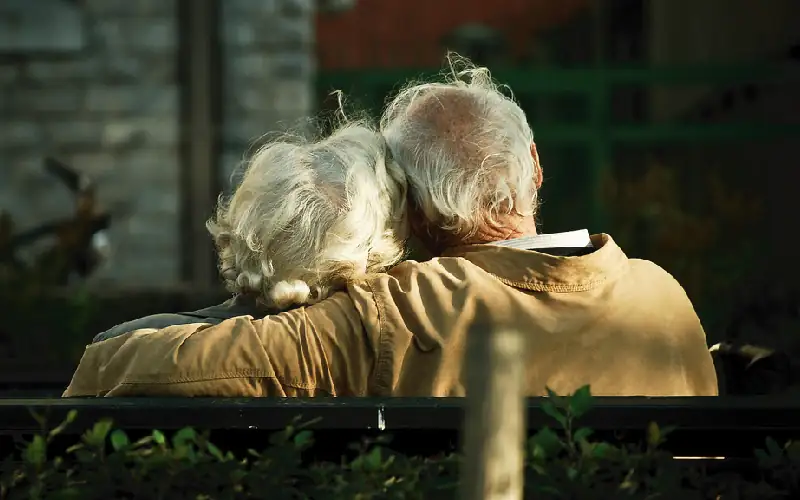
The earliest gerontological theory in the functionalist perspective is disengagement theory, which suggests that withdrawing from society and social relationships is a natural part of growing old. There are several main points to the theory. First, because everyone expects to die one day, and because we experience physical and mental decline as we approach death, it is natural to withdraw from individuals and society. Second, as the elderly withdraw, they receive less reinforcement to conform to social norms. Therefore, this withdrawal allows a greater freedom from the pressure to conform. Finally, social withdrawal is gendered, meaning it is experienced differently by men and women. Because men focus on work and women focus on marriage and family, when they withdraw they will be unhappy and directionless until they adopt a role to replace their accustomed role that is compatible with the disengaged state (Cummings and Henry 1961).
The suggestion that old age was a distinct state in the life course, characterized by a distinct change in roles and activities, was groundbreaking when it was first introduced. However, the theory is no longer accepted in its classic form. Criticisms typically focus on the application of the idea that seniors universally naturally withdraw from society as they age, and that it does not allow for a wide variation in the way people experience aging (Hothschild 1975).
The social withdrawal that Cummings and Henry recognized (1961), and its notion that elderly people need to find replacement roles for those they’ve lost, is addressed anew in activity theory. According to this theory, activity levels and social involvement are key to this process, and key to happiness (Havinghurst 1961; Neugarten 1964; Havinghurst, Neugarten, and Tobin 1968). According to this theory, the more active and involved an elderly person is, the happier he or she will be. Critics of this theory point out that access to social opportunities and activity are not equally available to all. Moreover, not everyone finds fulfillment in the presence of others or participation in activities. Reformulations of this theory suggest that participation in informal activities, such as hobbies, are what most affect later life satisfaction (Lemon, Bengtson, and Petersen 1972).
According to continuity theory, the elderly make specific choices to maintain consistency in internal (personality structure, beliefs) and external structures (relationships), remaining active and involved throughout their elder years. This is an attempt to maintain social equilibrium and stability by making future decisions on the basis of already developed social roles (Atchley 1971; Atchley 1989). One criticism of this theory is its emphasis on so-called “normal” aging, which marginalizes those with chronic diseases such as Alzheimer’s.
Sociology in the Real World: The Graying of American Prisons
The COVID-19 pandemic placed a particular burden on prison populations and government officials who manage them. Many people unfamiliar with American prisons may have assumed this concern was due to the obvious: Prisons are by definition confined spaces, where space and freedom are in short supply. Incarcerated people often share cells, restrooms, and other facilities. These are all contributing factors to the grave concerns about prisoners and COVID. But they were all exacerbated by the one overall comorbidity for the coronavirus: age.
Just like elderly people outside of prison generally suffered the most from the disease, the same age group was highly susceptible in prison. Perhaps the most dire circumstance is the size and percentage of that age group in prison. By the time the pandemic hit, the population of people over 50 in American prisons was, for the first time in history, larger than every other age group, and nearly 200,000 people in correctional facilities were 55 and over. That portion of the prison population tripled from 2000 to 2016 (Li 2020).
Two factors contribute significantly to this country’s aging prison population. One is the tough-on-crime reforms of the 1980s and 1990s, when mandatory minimum sentencing and “three strikes” policies sent many people to jail for thirty years to life, even when the third strike was a relatively minor offense. Many of today’s elderly prisoners are those who were incarcerated thirty years ago for life sentences. The other factor influencing today’s aging prison population is the aging of the overall population. As discussed in the section on aging in the United States, the percentage of people over sixty-five years old is increasing each year due to rising life expectancies and the aging of the Baby Boom generation.
So why should it matter that the elderly prison population is growing so swiftly? As discussed in the section on the process of aging, growing older is accompanied by a host of physical problems, like failing vision, mobility, and hearing. Chronic illnesses like heart disease, arthritis, and diabetes also become increasingly common as people age, whether they are in prison or not. In many cases, elderly prisoners are physically incapable of committing a violent—or possibly any—crime. Is it ethical to keep them locked up for the short remainder of their lives? And is it practical?
Aging inmates require far more healthcare, which places massive burdens on prison budgets and expenditures. When the healthcare costs are considered, some officials estimate the costs of incarcerating an aging person to be three times higher than to keep a younger person in prison. On the flip side, reducing prison sentences in Maryland saved an estimated $185 million over five years. When considering that many of these elderly people have served the majority of their sentence and generally pose a lower risk to society, many people in the corrections system itself advocate for releasing them early (Reese 2019).
Conflict Perspective¶
Theorists working the conflict perspective view society as inherently unstable, an institution that privileges the powerful wealthy few while marginalizing everyone else. According to the guiding principle of conflict theory, social groups compete with other groups for power and scarce resources. Applied to society’s aging population, the principle means that the elderly struggle with other groups—for example, younger society members—to retain a certain share of resources. At some point, this competition may become conflict.
For example, some people complain that the elderly get more than their fair share of society’s resources. In hard economic times, there is great concern about the huge costs of Social Security and Medicare. One of every four tax dollars, or about 28 percent, is spent on these two programs. In 1950, the federal government paid $781 million in Social Security payments. Now, the payments are 870 times higher. In 2008, the government paid $296 billion (Statistical Abstract 2011). The medical bills of the nation’s elderly population are rising dramatically. While there is more care available to certain segments of the senior community, it must be noted that the financial resources available to the aging can vary tremendously by race, social class, and gender.
There are three classic theories of aging within the conflict perspective. Modernization theory (Cowgill and Holmes 1972) suggests that the primary cause of the elderly losing power and influence in society are the parallel forces of industrialization and modernization. As societies modernize, the status of elders decreases, and they are increasingly likely to experience social exclusion. Before industrialization, strong social norms bound the younger generation to care for the older. Now, as societies industrialize, the nuclear family replaces the extended family. Societies become increasingly individualistic, and norms regarding the care of older people change. In an individualistic industrial society, caring for an elderly relative is seen as a voluntary obligation that may be ignored without fear of social censure.
The central reasoning of modernization theory is that as long as the extended family is the standard family, as in preindustrial economies, elders will have a place in society and a clearly defined role. As societies modernize, the elderly, unable to work outside of the home, have less to offer economically and are seen as a burden. This model may be applied to both the developed and the developing world, and it suggests that as people age they will be abandoned and lose much of their familial support since they become a nonproductive economic burden.
Another theory in the conflict perspective is age stratification theory (Riley, Johnson, and Foner 1972). Though it may seem obvious now, with our awareness of ageism, age stratification theorists were the first to suggest that members of society might be stratified by age, just as they are stratified by race, class, and gender. Because age serves as a basis of social control, different age groups will have varying access to social resources such as political and economic power. Within societies, behavioral age norms, including norms about roles and appropriate behavior, dictate what members of age cohorts may reasonably do. For example, it might be considered deviant for an elderly woman to wear a bikini because it violates norms denying the sexuality of older females. These norms are specific to each age strata, developing from culturally based ideas about how people should “act their age.”
Thanks to amendments to the Age Discrimination in Employment Act (ADEA), which drew attention to some of the ways in which our society is stratified based on age, U.S. workers no longer must retire upon reaching a specified age. As first passed in 1967, the ADEA provided protection against a broad range of age discrimination and specifically addressed termination of employment due to age, age specific layoffs, advertised positions specifying age limits or preferences, and denial of healthcare benefits to those over sixty-five years old (U.S. EEOC 2012).
Age stratification theory has been criticized for its broadness and its inattention to other sources of stratification and how these might intersect with age. For example, one might argue that an older white male occupies a more powerful role, and is far less limited in his choices, compared to an older white female based on his historical access to political and economic power.
Finally, exchange theory (Dowd 1975), a rational choice approach, suggests we experience an increased dependence as we age and must increasingly submit to the will of others because we have fewer ways of compelling others to submit to us. Indeed, inasmuch as relationships are based on mutual exchanges, as the elderly become less able to exchange resources, they will see their social circles diminish. In this model, the only means to avoid being discarded is to engage in resource management, like maintaining a large inheritance or participating in social exchange systems via child care. In fact, the theory may depend too much on the assumption that individuals are calculating. It is often criticized for affording too much emphasis to material exchange and devaluing nonmaterial assets such as love and friendship.
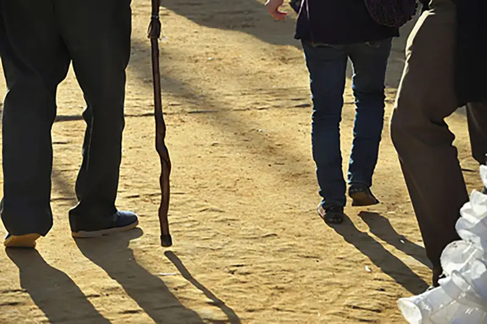
Symbolic Interactionism¶
Generally, theories within the symbolic interactionist perspective focus on how society is created through the day-to-day interaction of individuals, as well as the way people perceive themselves and others based on cultural symbols. This microanalytic perspective assumes that if people develop a sense of identity through their social interactions, their sense of self is dependent on those interactions. A woman whose main interactions with society make her feel old and unattractive may lose her sense of self. But a woman whose interactions make her feel valued and important will have a stronger sense of self and a happier life.
Symbolic interactionists stress that the changes associated with old age, in and of themselves, have no inherent meaning. Nothing in the nature of aging creates any particular, defined set of attitudes. Rather, attitudes toward the elderly are rooted in society.
One microanalytical theory is Rose’s (1962) subculture of aging theory, which focuses on the shared community created by the elderly when they are excluded (due to age), voluntarily or involuntarily, from participating in other groups. This theory suggests that elders will disengage from society and develop new patterns of interaction with peers who share common backgrounds and interests. For example, a group consciousness may develop within such groups as AARP around issues specific to the elderly like the Medicare “doughnut hole,” focused on creating social and political pressure to fix those issues. Whether brought together by social or political interests, or even geographic regions, elders may find a strong sense of community with their new group.
Another theory within the symbolic interaction perspective is selective optimization with compensation theory. Baltes and Baltes (1990) based their theory on the idea that successful personal development throughout the life course and subsequent mastery of the challenges associated with everyday life are based on the components of selection, optimization, and compensation. Though this happens at all stages in the life course, in the field of gerontology, researchers focus attention on balancing the losses associated with aging with the gains stemming from the same. Here, aging is a process and not an outcome, and the goals (compensation) are specific to the individual.
According to this theory, our energy diminishes as we age, and we select (selection) personal goals to get the most (optimize) for the effort we put into activities, in this way making up for (compensation) the loss of a wider range of goals and activities. In this theory, the physical decline postulated by disengagement theory may result in more dependence, but that is not necessarily negative, as it allows aging individuals to save their energy for the most meaningful activities. For example, a professor who values teaching sociology may participate in a phased retirement, never entirely giving up teaching, but acknowledging personal physical limitations that allow teaching only one or two classes per year.
Swedish sociologist Lars Tornstam developed a symbolic interactionist theory called gerotranscendence: the idea that as people age, they transcend the limited views of life they held in earlier times. Tornstam believes that throughout the aging process, the elderly become less self-centered and feel more peaceful and connected to the natural world. Wisdom comes to the elderly, Tornstam’s theory states, and as the elderly tolerate ambiguities and seeming contradictions, they let go of conflict and develop softer views of right and wrong (Tornstam 2005).
Tornstam does not claim that everyone will achieve wisdom in aging. Some elderly people might still grow bitter and isolated, feel ignored and left out, or become grumpy and judgmental. Symbolic interactionists believe that, just as in other phases of life, individuals must struggle to overcome their own failings and turn them into strengths.
Chapter Review¶
Key Terms¶
- activity theory
- a theory which suggests that for individuals to enjoy old age and feel satisfied, they must maintain activities and find a replacement for the statuses and associated roles they have left behind as they aged
- age stratification theory
- a theory which states that members of society are stratified by age, just as they are stratified by race, class, and gender
- ageism
- discrimination based on age
- baby Boomers
- people in the United States born between approximately 1946 and 1964
- centenarians
- people 100 years old or older
- cohort
- a group of people who share a statistical or demographic trait
- continuity theory
- a theory which states that the elderly make specific choices to maintain consistency in internal (personality structure, beliefs) and external structures (relationships), remaining active and involved throughout their elder years
- dependency ratio
- the number of nonproductive citizens (young, disabled, elderly) to productive working citizens
- disengagement theory
- a theory which suggests that withdrawing from society and social relationships is a natural part of growing old
- elder abuse
- the act of a caretaker intentionally depriving an older person of care or harming the person in their charge
- exchange theory
- a theory which suggests that we experience an increased dependence as we age and must increasingly submit to the will of others, because we have fewer ways of compelling others to submit to us
- filial piety
- deference and respect to one’s parents and ancestors in all things
- geriatrics
- a medical specialty focusing on the elderly
- gerontocracy
- a type of social structure wherein the power is held by a society’s oldest members
- gerontology
- a field of science that seeks to understand the process of aging and the challenges encountered as seniors grow older
- gerotranscendence
- the idea that as people age, they transcend limited views of life they held in earlier times
- grief
- a psychological, emotional, and social response to the feelings of loss that accompanies death or a similar event
- hospice
- healthcare that treats terminally ill people by providing comfort during the dying process
- life course
- the period from birth to death, including a sequence of predictable life events
- life expectancy
- the number of years a newborn is expected to live
- modernization theory
- a theory which suggests that the primary cause of the elderly losing power and influence in society are the parallel forces of industrialization and modernization
- physician-assisted suicide
- the voluntary use of lethal medication provided by a medical doctor to end one’s life
- primary aging
- biological factors such as molecular and cellular changes
- secondary aging
- aging that occurs due to controllable factors like exercise and diet
- selective optimization with compensation theory
- a theory based on the idea that successful personal development throughout the life course and subsequent mastery of the challenges associated with everyday life are based on the components of selection, optimization, and compensation
- senescence
- the aging process, including biological, intellectual, emotional, social, and spiritual changes
- social gerontology
- a specialized field of gerontology that examines the social (and sociological) aspects of aging
- subculture of aging theory
- a theory that focuses on the shared community created by the elderly when they are excluded (due to age), voluntarily or involuntarily, from participating in other groups
- supercentenarians
- people 110 of age or older
- thanatology
- the systematic study of death and dying
Summary¶
13.1 Who Are the Elderly? Aging in Society¶
The social study of aging uses population data and cohorts to predict social concerns related to aging populations. In the United States, the population is increasingly older (called “the graying of the United States”), especially due to the baby Boomer segment. Global studies on aging reveal a difference in life expectancy between core and peripheral nations as well as a discrepancy in nations’ preparedness for the challenges of increasing elderly populations.
13.2 The Process of Aging¶
Old age affects every aspect of human life: biological, social, and psychological. Although medical technology has lengthened life expectancies, it cannot eradicate aging and death. Cultural attitudes shape the way our society views old age and dying, but these attitudes shift and evolve over time.
13.3 Challenges Facing the Elderly¶
As people enter old age, they face challenges. Ageism, which involves stereotyping and discrimination against the elderly, leads to misconceptions about their abilities. Although elderly poverty has been improving for decades, many older people may be detrimentally affected by the 2008 recession. Some elderly people grow physically frail and, therefore, dependent on caregivers, which increases their risk of elder abuse.
13.4 Theoretical Perspectives on Aging¶
The three major sociological perspectives inform the theories of aging. Theories in the functionalist perspective focus on the role of elders in terms of the functioning of society as a whole. Theories in the conflict perspective concentrate on how elders, as a group, are at odds with other groups in society. And theories in the symbolic interactionist perspective focus on how elders’ identities are created through their interactions.
References¶
References
Boston University School of Medicine. 2014. “New England Centenarian Study Overview.” Retrieved November 2, 2014 (http://www.bumc.bu.edu/centenarian/overview/).
Diebel, Matthew. 2014. “Yes, Six People Born in the 19th Century Are Still With Us.” USA Today. Retrieved November 2, 2014 (http://www.usatoday.com/story/news/world/2014/09/05/six-people-still-alive-who-were-born-in-the-19th-century/15122367/).
Gerontology Research Group. 2014. “Current Validated Living Supercentenarians.” Retrieved November 2, 2014 (http://www.grg.org/Adams/E.HTM).
United States Census Bureau. 2011. “Census Bureau Releases Comprehensive Analysis of Fast-Growing 90-and0Older Population.” Newsroom Archive, November 17. Retrieved November 1, 2014 (https://www.census.gov/newsroom/releases/archives/aging_population/cb11-194.html).
13.1 Who Are the Elderly? Aging in Society
Bannister, Judith, David E. Bloom, and Larry Rosenberg. 2010. Population Aging and Economic Growth in China. Cambridge, MA: The Program on the Global Demography of Aging.
Bartram, L., and B. Roe. 2005. “Dependency Ratios: Useful Policy-Making Tools?” Geriatrics & Gerontology International 5:224–228.
Bierman, Libby. 2011. “The Baby Boom = The BIG Boom in Healthcare.” Forbes, July 22. Retrieved January 31, 2012 (http://www.forbes.com/sites/sageworks/2011/07/22/the-baby-boom-the-big-boom-in-healthcare/).
Bookman, Ann, and Delia Kimbrel. 2011. “Families and Elder Care in the Twenty-First Century.” The Future of Children 21:117–140.
Bostrom, Josh. 2005. “Aging Baby Boomers Will Drive Health-Care Innovation.” Infoworld. Retrieved January 31, 2012 (http://www.infoworld.com/t/business/aging-baby-Boomers-will-drive-health-care-innovation-054).
Cohn, D'Vera and Passel, Jeffrey S. 2018. “A Record 64 Million Americans Live in Multigenerational Households.” Pew Research Center. (https://www.pewresearch.org/fact-tank/2018/04/05/a-record-64-million-americans-live-in-multigenerational-households/)
Congressional Budget Office. 2008. “Long-Term Outlook for Medicare, Medicaid and Total Health Care Spending.” Retrieved January 31, 2012 (http://www.cbo.gov/ftpdocs/102xx/doc10297/Chapter2.5.1.shtml).
Emling, Shelley. 2017. (“The Age At Which You Are Officially Old.”) AARP. (https://www.aarp.org/home-family/friends-family/info-2017/what-age-are-you-old-fd.html)
Farrel, Diana, David Court, Eric Beinhocker, John Forsyth, Ezra Greenberg, Suruchi Shukla, Jonathan Ablett, and Geoffrey Greene. 2008. Talkin' 'Bout My Generation: The Economic Impact of Aging US Baby Boomers. McKinsey Global Institute. Retrieved February 12, 2012 (http://www.mckinsey.com/Insights/MGI/Research/Americas/Talkin_bout_my_generation).
Gerontological Society of America. 2008. “Baby Boomer Health Care Crisis Looms.” Science Daily, April 17. Retrieved January 31, 2012 (http://www.sciencedaily.com/releases/2008/04/080417111300.htm).
Gilleard, Chris, and Paul Higgs. 2007. “The Third Age and the Baby Boomers: Two Approaches to the Social Structuring of Later Life.” International Journal of Ageing and Later Life 2(2):13–30.
Graham, Judith. 2021. “Older Adults Without Family or Friends Lag in Race to Get Vaccines.” KHN. (https://khn.org/news/article/older-adults-without-family-or-friends-lag-in-race-to-get-vaccines/)
Hamilton, Gary. 1990. “Patriarchy, Patrimonialism, and Filial Piety: A Comparison of China and Western Europe.” British Journal of Sociology 41:77–104.
Hashimoto, Akiko. 1996. The Gift of Generations: Japanese and American Perspectives on Aging and the Social Contract. New York: Cambridge University Press.
Hobbs, Frank. 1994. “The Elderly Population.” Population Profile of the United States. Retrieved January 28, 2012 (http://www.census.gov/population/www/pop-profile/elderpop.html).
Hsu, Francis. 1971. “Filial Piety in Japan and China: Borrowing, Variation and Significance.” Journal of Comparative Family Studies 2:67–74.
Lee, Mary. 2009. “Trends in Global Population Growth.” Research Starters Sociology: Academic Topic Overview. Retrieved January 28, 2012 from (http://www.ebscohost.com/academic/academic-search-premier).
Levy, Becca R., Martin D. Slade, Suzanne R. Kunkel, and Stanislav V. Kasl, 2002. “Longevity Increased by Positive Self-perceptions of Aging.” Journal of Personality and Social Psychology 83(2):261–270.
Logan, J.R., R. Ward, and G. Spitze. 1992. “As Old as You Feel: Age Identity in Middle and Later Life.” Sociological Forces 71:451–67.
Macunovich, Diane J. 2000. The Baby Boomers. New York: Barnard College Department of Economics.
Mujahid, G. 2006. “Population Ageing in East and South-East Asia: Current Situation and Emerging Challenges.” Papers in Population Ageing No.1. New York: United Nations Population Fund. Retrieved January 28, 2012 (http://www.eldis.org/assets/Docs/23355.html).
Native News Network. 2011. “Age Distribution: AIAN Compared to Total US.” Retrieved January 22, 2012 (http://www.nativenewsnetwork.com/native-youth-count.html).
Ogawa, Naohiro, and Robert Retherford. 1993. “Care of the Elderly in Japan: Changing Norms and Expectations.” Journal of Marriage and the Family 55:585–597.
Pew Research Center. 2010. “The Return of the Multi-Generational Family Household.” Pew Research Social & Demographic Trends; Section I. Retrieved November 1, 2014 (http://www.pewsocialtrends.org/2010/03/18/the-return-of-the-multi-generational-family-household/).
Population Fund. Retrieved January 28, 2012 (http://www.eldis.org/assets/Docs/23355.html).
Raikhola, Pushkar Singh, and Yasuhiro Kuroki. 2009. “Aging and Elderly Care Practice in Japan: Main Issues, Policy and Program Perspective; What Lessons Can Be Learned from Japanese Experiences?” Dhaulagiri: Journal of Sociology & Anthropology 3:41–82.
Reuteman, Rob. 2010. Will Baby Boomers Bankrupt Social Security? Retrieved January 31, 2012 (http://www.cnbc.com/id/34941334/Will_Baby_Boomers_Bankrupt_Social_Security).
Rothbaum, F. 1983. “Aging and Age Stereotypes.” Social Cognition 2:171–84.
Shaw, Gina. “Hip and Knee Replacements on the Rise.” Web MD. Retrieved February 13, 2012 (http://arthritis.webmd.com/features/hip-knee-replacements-rise).
Sweetser, Dorian Apple. 1984. “Love and Work: Intergenerational Household Composition in the U. S. in 1900.” Journal of Marriage and the Family 46(2):289–293.
U.S. Census Bureau. 2013. “State and County Facts: USA Quick Facts.” US Census Bureau. Retrieved November 1, 2014 (http://quickfacts.census.gov/qfd/states/00000.html).
U.S. Census Bureau. 2011a. “Age and Sex Composition 2010.” 2010 Census Briefs, May. Retrieved February 13, 2012 (http://www.census.gov/prod/cen2010/briefs/c2010br-03.pdf).
U.S. Census Bureau. 2011b. “The Older Population: 2010.” 2010 Census Briefs, November. Retrieved December 13, 2011 (http://0-www.census.gov.iii-server.ualr.edu/prod/cen2010/briefs/c2010br-09.pdf).
U.S. Census Bureau. 2011c. “Population.” The 2012 Statistical Abstract. Retrieved January 28, 2012 (http://www.census.gov/compendia/statab/cats/population.html).
U.S. Census Bureau. 2018. “The Population 65 Years and Older.” (https://www.census.gov/library/visualizations/interactive/population-65-years.html)
Werner, Carrie. 2011. “The Older Population: 2010.” U.S. Census Bureau. Retrieved January 28, 2012 (http://www.census.gov/prod/cen2010/briefs/c2010br-09.pdf).
Wiencaw, Ruth. 2009. “Caring for the Elderly in America.” Research Starters. Retrieved January 28, 2012 (http://www.ebscohost.com/academic/academic-search-premier).
World Health Organization. 2012. “Definition of an Older or Elderly Person.” Retrieved January 28, 2012 (http://www.who.int/healthinfo/survey/ageingdefnolder/en/index.html).
Xuequan, Mu. 2011. “Premier Wen Join Nursing Home Seniors to Celebrate Mid-Autumn Festival.” Retrieved February 12, 2012 (http://news.xinhuanet.com/english2010/china/2011-09/13/c_131134367.htm).
Yap, Mui Teng, Leng Leng Thang, and John W. Traphagan. 2005. “Introduction: Aging in Asia—Perennial Concerns on Support and Caring for the Old.” Journal of Cross-Cultural Gerontology 20:257–267.
Zelenev, Sergei. 2008. “Regional Dimensions of the Ageing Situation.” The United Nations. Retrieved January 28, 2012 (http://social.un.org/index/Ageing/Resources/PapersandPublications.aspx).
13.2 The Process of Aging
Administration on Aging. 2011. “A Profile of Older Americans 2010.” Retrieved January 29, 2012 (http://www.aoa.gov/AoARoot/Aging_Statistics/Profile/2010/14.aspx).
AGS. 2021. “Geriatrics Workforce By The Numbers (Updated 2021). American Geriatrics Society. (https://www.americangeriatrics.org/geriatrics-profession/about-geriatrics/geriatrics-workforce-numbers)
Bazzini, D.G., and W.D. Mclntosh. 1997. "The Aging Women in Popular Film: Underrepresented, Unattractive, Unfriendly, and Unintelligent." Sex Roles 36:531–43.
Bryant, Ed. 2004. “Male and Female Sexual Dysfunction.” Voice of the Diabetic 19(1). Retrieved January 29, 2012 (http://www.nfb.org/nfb/diabetic_sexual_dysfunction.asp?SnID=963479200).
Clarfield, A. Mark. 1990. “Dr. Ignatz Nascher and the Birth of Geriatrics.” Canadian Medical Association Journal 143(9):944–945, 948.
Cole, Thomas R. 1993. The Journey of Life: a Cultural History of Aging in America. Cambridge: Cambridge University Press.
Crimmins, Eileen. 2004. “Trends in the Health of the Elderly.” Annual Review of Public Health 25:79–98.
Davidson, Kate. 2002. “Gender Differences in New Partnership Choices and Constraints for Older Widows and Widowers.” Ageing International 27: 43–60.
Drummond, Murray. 1998. “Sports, Aging Men, and Constructions of Masculinity.” Generations 32:32–35.
Erikson, Erik H. 1963 [1950]. Childhood and Society. New York: Norton.
Fredriksen-Goldsen, K.I., H.J. Kim, C.A. Emlet, A. Muraco, E.A. Erosheva, C.P. Hoy-Ellis, J. Goldsen, and H. Petry. 2011. The Aging and Health Report: Disparities and Resilience among Lesbian, Gay, Bisexual, and Transgender Older Adults. Seattle, WA: Institute for Multigenerational Health. Retrieved January 29, 2012 (http://caringandaging.org/wordpress/wp-content/uploads/2011/05/Full-Report-FINAL.pdf).
Grant, Jaime M. 2009. “Outing Age 2010: Public Policy Issues Affecting Lesbian, Gay, Bisexual and Transgender (LGBT) Elders.” National Gay and Lesbian Task Force Policy Institute. Washington, DC. Retrieved January 29, 2012 (http://www.thetaskforce.org/downloads/reports/reports/outingage_final.pdf).
Gravier, Elizabeth. 2021. “Experts say you should have 10 times your income saved to retire by age 67—here’s what to do if you aren’t yet there.” CNBC. (https://www.cnbc.com/select/what-to-do-if-you-havent-saved-enough-for-retirement/)
Hagestad, Gunhild, and Peter Uhlenberg. 2006. “Should We Be Concerned about Age Segregation?” Research on Aging 28:638–653.
Harold and Maude. N.d. Retrieved February 1, 2012 (http://www.imdb.com/title/tt0067185/).
Hillman, Jennifer. 2011. “A Call for an Integrated Biopsychosocial Model to Address Fundamental Disconnects in an Emergent Field: An Introduction to the Special Issue on 'Sexuality and Aging'.” Aging International 36:303–312.
Hospice Foundation of America. 2012a. “Welcome.” Retrieved February 13, 2012 (http://register.hospicefoundation.org/welcome).
Hospice Foundation of America. 2012b. “What Is Hospice?” Retrieved January 29, 2012 (http://www.hospicefoundation.org/whatishospice).
Jenkins D., C. Walker, H. Cohen, and L. Curry. 2010. “A Lesbian Older Adult Managing Identity Disclosure: A Case Study.” Journal of Gerontological Social Work 53:402–420.
Karantzas, Gery. 2018. “Mind the Gap: Does Age Difference in Relationships Matter.” The Conversation. (https://theconversation.com/mind-the-gap-does-age-difference-in-relationships-matter-94132)
Lindau, Stacy Tessler, M.D., L. Philip Schumm, Edward O. Laumann, Wendy Levinson, Colm A. O'Muircheartaigh, and Linda J. Waite. 2007. “A Study of Sexuality and Health among Older Adults in the United States.” New England Journal of Medicine 357:762–774.
Lloyd, Liz, Kate White, and Eileen Sutton. 2011. “Researching the End-of-Life in Old Age: Cultural, Ethical and Methodological Issues.” Aging &Society 31:386–407.
Marshall, B., and S. Katz. 2002. “Forever Functional: Sexual Fitness and the Aging Male Body.” Body and Society 8:43–70.
MetLife Mature Market Institute. 2010. “Still Out, Still Aging: The Met Life Study of Lesbian, Gay, Bisexual, and Transgender Baby Boomers.” Retrieved January 29, 2012 (http://www.metlife.com/assets/cao/mmi/publications/studies/2010/mmi-still-out-still-aging.pdf).
Munch, S. 2004. "Gender-Biased Diagnosing of Women's Medical Complaints: Contributions of Feminist Thought, 1970-1995." Women & Health 40:101–121.
Munnell, Alice. 2011. “What Is the Average Retirement Age?” Center for Retirement Research. Retrieved January 29, 2012 (http://crr.bc.edu/briefs/what_is_the_average_retirement_age.html).
National Senior Citizens Law Center. 2011. “LGTB Older Adults in Long-Term Care Facilities: Stories from the Field.” Retrieved January 30, 2012 (http://www.lgbtlongtermcare.org/).
Nonacs, Ruta. 2018. “Female Sexual Dysfunction: New Treatments on the Way.” MGH Center for Women's Mental Health. (https://womensmentalhealth.org/posts/female-sexual-dysfunction-new-treatments-on-the-way/)
Packer, Dominic and Alison Chasteen. 2006. “Looking Towards the Future: How Possible Aged Selves Influence Prejudice Towards Older Adults.” Social Cognition 24:218–247.
Parker, Marti and Thorslund Mats. 2007. “Health Trends in the Elderly Population: Getting Better and Getting Worse.” The Gerontologist 47:150–158.
Pleis, J.R., J.W. Lucas, and B.W. Wared. 2009. “Summary Health Statistics for U.S. Adults: National Health Interview Survey, 2008.” Data from the National Health Survey, Series 10. No. 242.
Riley, Matilda White. 1978. “Aging, Social Change, and the Power of Ideas.” Daedalus 107:39–52.
Sharpe, P.A. 1995. “Older Women and Health Services: Moving from Ageism Toward Empowerment.” Women & Health 22:9–23.
Spector-Mersel, Gabriela. 2006. “Never-Aging Stories: Western Hegemonic Masculinity Scripts.” Journal of Gender Studies 15:67–82.
United Nations. 2020. “World Population Aging, 2019 Highlights.” United Nations. (https://www.un.org/en/development/desa/population/publications/pdf/ageing/WorldPopulationAgeing2019-Highlights.pdf
Whitbourne, Susan and Stacey Whitbourne. 2010. Adult Development and Aging: Biopsychosocial Perspectives. 4th ed. Hoboken, NJ: Wiley.
13.3 Challenges Facing the Elderly
Acierno, R., Melba A. Hernandez, Ananda B. Amstadter, Heidi S. Resnick, Kenneth Steve, Wendy Muzzy, and Dean G. Kilpatrick. 2010. “Prevalence and Correlates of Emotional, Physical, Sexual, Financial Abuse and Potential Neglect in the United States.” American Journal of Public Health 100:292–7.
Administration on Aging. 2009. “Data Sources on the Impact of the 2008 Financial Crisis on the Economic Well-being of Older Americans Aging Forum Report Issue #1.” Retrieved February 13, 2012 (http://www.agingstats.gov/Main_Site/docs/DSOA_Aging_Brief.pdf).
Brownell, Patricia. 2010. “Social Issues and Social Policy Response to Abuse and Neglect of Older Adults.” Pp. 1–16 in Aging, Ageism and Abuse: Moving from Awareness to Action, edited by G. Gutman and C. Spencer. Amsterdam, the Netherlands: Elsevier.
Glantz, Aaron. 2010. “Suicide Rates Soar among WWII Vets, Records Show.” The Bay Citizen, November 11. Retrieved February 27, 2012 (http://www.baycitizen.org/veterans/story/suicide-rates-soar-among-wwii-vets/comments/#comments).
Honor Flight Network. 2011. Retrieved September 22, 2011 (http://www.honorflight.org/).
Kohn, Robert, and Wendy Verhoek-Oftedahl. 2011. “Caregiving and Elder Abuse.” Medicine & Health Rhode Island 94(2):47–49.
National Center for Veterans Analysis and Statistics. 2011. “VA Benefits and Health Care Utilization.” November 9. Retrieved February 13, 2012 (http://www.va.gov/Vetdata/docs/Quickfacts/4x6_fall_11_sharepoint_Final.pdf).
National Center of Elder Abuse. 2011. “Major Types of Elder Abuse.” Retrieved January 21, 2012 (http://ncea.aoa.gov/FAQ/Type_Abuse/).
Stuart, Spencer. 2008. “Leading CEOs: A Statistical Snapshot of S&P 500 Leaders.” Retrieved February 13, 2012 (http://content.spencerstuart.com/sswebsite/pdf/lib/2005_CEO_Study_JS.pdf).
Urban Institute and Kaiser Commission. 2010. “Poverty Rate by Age.” Retrieved January 21, 2012 (http://www.statehealthfacts.org/comparebar.jsp?ind=10&cat=1").
U.S. Census Bureau. 2009. “Webinar on 2008 Income, Poverty, and Health Insurance Estimates from the Current Population Survey.” Retrieved February 13, 2012 (http://www.census.gov/newsroom/releases/archives/news_conferences/2009-09-10_remarks_johnson.html).
U.S. Department of Veteran Affairs. 2010. “Veteran Population Projections FY 2000 to FY2036.” December. Retrieved February 13, 2012 (http://www.va.gov/vetdata/docs/quickfacts/Population-slideshow.pdf).
13.4 Theoretical Perspectives on Aging
Abner, Carrie. 2006. “Graying Prisons: States Face Challenges of an Aging Inmate Population.” State News, November/December.
Atchley, R.C. 1971. "Retirement and Leisure Participation: Continuity or Crisis?" The Gerontologist 11:13–17.
Atchley, R.C. 1989. "A Continuity Theory of Normal Aging." The Gerontologist 29:183–190.
Baltes, Paul, and Margret Baltes, eds. 1990. Successful Aging: Perspectives from The Behavioral Sciences. New York: Press Syndicate of the University of Cambridge.
Cowgill, D.O. and L.D. Holmes, eds. 1972. Aging and Modernization. New York: Appleton-Century-Crofts.
Crosnoe, Robert, and Glen H. Elder. 2002. “Life Course Transitions, the Generational Stake, and Grandparent-Grandchild Relationships.” Journal of Marriage and Family 64(4):1089–1096.
Cumming, Elaine, and William Earl Henry. 1961. Growing Old. New York: Basic.
Dowd, James J. 1975. "Aging as Exchange: A Preface to Theory." Journal of Gerontology 30:584–594.
Havinghurst, R.J. 1961. "Successful Aging." The Gerontologist 1:8–13.
Havinghurst, Robert, Bernice Neugarten, and Sheldon Tobin. 1968. “Patterns of Aging.” Pp. 161–172 in Middle Age and Aging, edited by B. Neugarten. Chicago, IL: University of Chicago Press.
Hothschild, Arlie. 1975. “Disengagement Theory: A Critique and Proposal.” American Sociological Review 40:563–569.
Human Rights Watch. 2012. Old Behind Bars: The Aging Prison Population in the United States. Retrieved February 2, 2012 (http://www.hrw.org/reports/2012/01/27/old-behind-bars).
Leadership Conference. N.d. “Chapter Three: Race, Sentencing and the “Tough Crime” Movement.” Retrieved February 2, 2012 (http://www.civilrights.org/publications/justice-on-trial/sentencing.html).
Lemon, B., V. Bengtson, and J. Petersen. 1972. “An Exploration of the Activity Theory of Aging: Activity Types and Life Expectation among In-Movers to a Retirement Community.” Journal of Gerontology 27:511–23.
Li, Wiehua and Lewis, Nicole. 2020. “This Chart Shows Why the Prison Population Is So Vulnerable to COVID-19.” The Marshall Project. (https://www.themarshallproject.org/2020/03/19/this-chart-shows-why-the-prison-population-is-so-vulnerable-to-covid-19)
Reese, Hope. 2019. “What Should We Do About Our Aging Prison Population?” JSTOR Daily. (https://daily.jstor.org/what-should-we-do-about-our-aging-prison-population/)
Riley, Matilda While, Marilyn Johnson, and Anne Foner. 1972. Aging and Society. Volume III, A Sociology of Age Stratification. New York: Russell Sage Foundation.
Rose, Arnold. 1960. “The Subculture of the Aging: A Topic for Sociological Research.” The Gerontologist 2:123–127.
Tornstam Lars. 2005. Gerotranscendence: A Developmental Theory of Positive Aging. New York: Springer Publishing Company.
U.S. Census Bureau. 2011. Statistical Abstract 2011: Table 147. Retrieved February 13, 2012 (http://www.census.gov/compendia/statab/cats/health_nutrition/medicare_medicaid.html).
U.S. Equal Employment Opportunity Commission. 2012. “The Age Discrimination in Employment Act 1967 (ADEA).” Retrieved January 30, 2012 (http://www.eeoc.gov/laws/statutes/adea.cfm).
Warren, Jenifer. 2002. “The Graying of the Prisons.” Los Angeles Times, June 9. Retrieved February 2, 2012 (http://articles.latimes.com/2002/jun/09/local/me-cons9).
Section Quiz¶
13.1 Who Are the Elderly? Aging in Society¶
1. In most countries, elderly women ______ than elderly men.
- are mistreated less
- live a few years longer
- suffer fewer health problems
- deal with issues of aging better
Answer
B
2. America’s baby Boomer generation has contributed to all of the following except:
- Social Security’s vulnerability
- improved medical technology
- Medicaid being in danger of going bankrupt
- rising Medicare budgets
Answer
C
3. The measure that compares the number of men to women in a population is ______.
- cohort
- sex ratio
- baby Boomer
- disengagement
Answer
B
4. The “graying of the United States” refers to ________.
- the increasing percentage of the population over sixty-five years old
- faster aging due to stress
- dissatisfaction with retirement plans
- increased health problems such as Alzheimer’s
Answer
A
5. What is the approximate median age of the United States?
- eighty-five
- sixty-five
- thirty-seven
- eighteen
Answer
C
13.2 The Process of Aging¶
6. Thanatology is the study of _____.
- life expectancy
- biological aging
- death and dying
- adulthood
Answer
C
7. In Erik Erikson’s developmental stages of life, with which challenge must older people struggle?
- Overcoming despair to achieve integrity
- Overcoming role confusion to achieve identity
- Overcoming isolation to achieve intimacy
- Overcoming shame to achieve autonomy
Answer
A
8. Who wrote the book On Death and Dying, outlining the five stages of grief?
- Ignatz Nascher
- Erik Erikson
- Elisabeth Kübler-Ross
- Carol Gilligan
Answer
C
9. For individual people of a certain culture, the life course is ________.
- the average age they will die
- the lessons they must learn
- the length of a typical bereavement period
- the typical sequence of events in their lives
Answer
D
10. In the United States, life expectancy rates in recent decades have ______.
- continued to gradually rise
- gone up and down due to global issues such as military conflicts
- lowered as healthcare improves
- stayed the same since the mid-1960s
Answer
A
13.3 Challenges Facing the Elderly¶
11. Today in the United States the poverty rate of the elderly is ______.
- lower than at any point in history
- increasing
- decreasing
- the same as that of the general population
Answer
B
12. Which action reflects ageism?
- Enabling WWII veterans to visit war memorials
- Speaking slowly and loudly when talking to someone over age sixty-five years old
- Believing that older people drive too slowly
- Living in a culture where elders are respected
Answer
B
13. Which factor most increases the risk of an elderly person suffering mistreatment?
- Bereavement due to widowhood
- Having been abusive as a younger adult
- Being frail to the point of dependency on care
- The ability to bestow a large inheritance on survivors
Answer
C
14. If elderly people suffer abuse, it is most often perpetrated by ______.
- spouses
- caregivers
- lawyers
- strangers
Answer
B
15. Veterans are two to four times more likely to ______ as people who did not serve in the military.
- be a victim of elder abuse
- die by suicide
- be concerned about financial stresses
- be abusive toward care providers
Answer
B
13.4 Theoretical Perspectives on Aging¶
16. Which assertion about aging in men would be made by a sociologist following the functionalist perspective?
- Men view balding as representative of a loss of strength.
- Men tend to have better retirement plans than women.
- Men have life expectancies three to five years shorter than women.
- Men who remain active after retirement play supportive community roles.
Answer
D
17. An older woman retires and completely changes her life. She is no longer raising children or working. However, she joins the YWCA to swim every day. She serves on the Friends of the Library board. She is part of a neighborhood group that plays Bunco on Saturday nights. Her situation most closely illustrates the ______ theory.
- activity
- continuity
- disengagement
- gerotranscendence
Answer
A
18. An older man retires from his job, stops golfing, and cancels his newspaper subscription. After his wife dies, he lives alone, loses touch with his children, and stops seeing old friends. His situation most closely illustrates the _______ theory.
- activity
- continuity
- disengagement
- gerotranscendence
Answer
C
19. What is the primary driver of modernization theory?
- Industrialization
- Aging
- Conflict
- Interactions
Answer
A
20. The Age Discrimination in Employment Act counteracts which theory?
- Modernization
- Conflict
- Disengagement
- Age stratification
Answer
D
Short Answer¶
13.1 Who Are the Elderly? Aging in Society¶
21. Baby Boomers have been called the “Me Generation.” Do you know any baby Boomers? In what way do they exemplify their generation?
22. What social issues involve age disaggregation (breakdowns into groups) of a population? What kind of sociological studies would consider age an important factor?
23. Conduct a mini-census by counting the members of your extended family, and emphasize age. Try to include three or four generations, if possible. Create a table and include total population plus percentages of each generation. Next, begin to analyze age patterns in your family. What issues are important and specific to each group? What trends can you predict about your own family over the next ten years based on this census? For example, how will family members’ needs and interests and relationships change the family dynamic?
13.2 The Process of Aging¶
24. Test Elisabeth Kübler-Ross’s five stages of grief. Think of someone or something you have lost. You might consider the loss of a relationship, possession, or aspect of your self-identity. For example, perhaps you dissolved a childhood friendship, sold your car, or got a bad haircut. For even a small loss, did you experience all five stages of grief? If so, how did the expression of each stage manifest? Did the process happen slowly or rapidly? Did the stages occur out of order? Did you reach acceptance? Try to recall the experience and analyze your own response to loss. Does your experience facilitate your empathizing with the elderly?
25. What do you think it will be like to be ten, twenty, and fifty years older than you are now? What facts are your assumptions based on? Are any of your assumptions about getting older false? What kind of sociological study could you establish to test your assumptions?
26. What is your relationship to aging and to time? Look back on your own life. How much and in what ways did you change in ten years and in twenty years? Does a decade seem like a long time or a short time in a life span? Now apply some of your ideas to the idea of aging. Do you think older people share similar experiences as they age?
13.3 Challenges Facing the Elderly¶
27. Make a list of all the biases, generalizations, and stereotypes about elderly people that you have seen or heard. Include everything, no matter how small or seemingly trivial. Try to rate the items on your list. Which statements can be considered myths? Which frequently turn into discrimination?
28. Have you known any person who experienced prejudice or discrimination based on age? Think of someone who has been denied an experience or opportunity simply for being too old. Write the story as a case study.
29. Think of an older person you know well, perhaps a grandparent, other relative, or neighbor. How does this person defy certain stereotypes of aging?
30. Older people suffer discrimination, and often, so do teenagers. Compare the discrimination of the elderly to that of teenagers. What do the groups share in common and how are they different?
13.4 Theoretical Perspectives on Aging¶
31. Remember Madame Jeanne Calment of France was the world's oldest living person until she died at 122 years old? Consider her life experiences from all three sociological points of view. Analyze her situation as if you were a functionalist, a symbolic interactionist, and a conflict theorist.
32. Which lifestyle do you think is healthiest for aging people—activity, continuity, or disengagement theories? What are the pros and cons of each theory? Find examples of real people who illustrate the theories, either from your own experience or your friends’ relationships with older people. Do your examples show positive or negative aspects of the theory they illustrate?
Further Research¶
13.1 Who Are the Elderly? Aging in Society¶
Gregory Bator founded the television show Graceful Aging and then developed a web site offering short video clips from the show. The purpose of Graceful Aging is to both inform and entertain, with clips on topics such as sleep, driving, health, safety, and legal issues. Bator, a lawyer, works on counseling seniors about their legal needs. Log onto Graceful Aging for a visual understanding of aging.
13.2 The Process of Aging¶
Read the article “A Study of Sexuality and Health among Older Adults in the United States”.
13.3 Challenges Facing the Elderly¶
Veterans who served in the U.S. Armed Forces during various conflicts represent cohorts. Veterans share certain aspects of life in common. To find information on veteran populations and how they are aging, study the information on the web site of the U.S. Department of Veterans Affairs.
Learn more about the Honor Flight Network, the organization offering trips to national war memorials in Washington, DC, at no cost to the veterans.
13.4 Theoretical Perspectives on Aging¶
New Dynamics of Aging is a web site produced by an interdisciplinary team at the University of Sheffield. It is supposedly the largest research program on aging in the United Kingdom to date. In studying the experiences of aging and factors that shape aging, including behaviors, biology, health, culture, history, economics, and technology, researchers are promoting healthy aging and helping dispel stereotypes.Learn more by logging onto it's website here.
Adapted from Introduction to Sociology 3e by OpenStax, licensed under CC BY 4.0. Access the original for free at openstax.org. Changes: converted to the web reading format of The Open Book Project.